СП 436.1325800.2018 «Инженерная защита территорий, зданий и сооружений от оползн»
О документе: разработчики, утверждение, регистрация, ключевые слова
СВОД ПРАВИЛ СП 436.1325800.2018
Издание официальное
1 ИСПОЛНИТЕЛИ - АО «НИЦ «Строительство» - НИИОСП им. Н.М. Герсеванова, ООО «НТЦ ГеоПроект»
2 ВНЕСЕН Техническим комитетом по стандартизации ТК 465 «Строительство»
3 ПОДГОТОВЛЕН к утверждению Департаментом градостроительной деятельности и архитектуры Министерства строительства и жилищнокоммунального хозяйства Российской Федерации (Минстрой России)
- 4 УТВЕРЖДЕН приказом Министерства строительства и жилищнокоммунального хозяйства Российской Федерации от 5 декабря 2018 г. № 787/пр и введен в действие с 6 июня 2019 г.
- 5 ЗАРЕГИСТРИРОВАН Федеральным агентством по техническому регулированию и метрологии (Росстандарт)
В случае пересмотра (замены) или отмены настоящего свода правил соответствующее уведомление будет опубликовано в установленном порядке. Соответствующая информация, уведомление и тексты размещаются также в информационной системе общего пользования - на официальном сайте разработчика (Минстрой России) в сети Интернет
© Минстрой России, 2018
Настоящий нормативный документ не может быть полностью или частично воспроизведен, тиражирован и распространен в качестве официального издания на территории Российской Федерации без разрешения Минстроя России
Дата введения - 2019-06-06
УДК ОКС 91.120
Ключевые слова: инженерная защита, оползни, обвалы, противооползневые сооружения, противообвальные сооружения
ОРГАНИЗАЦИЯ-РАЗРАБОТЧИК
АО "НИЦ "Строительство"
| Заместитель генерального директора по науке НИЦ | А.И.Звездов | |
|---|---|---|
| Руководители разработки | Директор НИИОСП | И.В.Колыбин |
| Зам. директора НИИОСП | Д.Е.Разводовский | |
| Ответственный | Зав. лабораторией НИИОСП | В.Г.Федоровский |
| Исполнители | Ведущий научный сотрудник НИИОСП | С.В.Курилло |
Введение
6 ВВЕДЕН ВПЕРВЫЕ
Настоящий свод правил разработан с учетом требований федеральных законов от 30 декабря 2009 г. № 384-ФЗ «Технический регламент о безопасности зданий и сооружений», от 27 декабря 2002 г. № 184-ФЗ «О техническом регулировании», от 21 июля 1997 г. № 117-ФЗ «О безопасности гидротехнических сооружений».
Настоящий свод правил разработан в развитие СП 116.13330 «Инженерная защита территорий, зданий и сооружений от опасных геологических процессов. Основные положения» в целях конкретизации положений по проектированию инженерной защиты территорий, зданий и сооружений от оползней и обвалов.
Свод правил разработан коллективом авторов: НИИОСП им. Н. М. Герсеванова -институт АО «НИЦ «Строительство» (канд. техн. наук И. В. Колыбин, канд. техн. наук Д.Е. Разводовский, канд. техн. наук В.Г. Федоровский, канд. техн. наук С.В. Курилло, канд. техн. наук Г.А. Бобырь ) и ООО «НТЦ ГеоПроект» (д-р техн. наук. С.И. Маций , канд. техн. наук О.Ю. Ещенко, канд. техн. наук Н.Н. Любарский, канд. техн. наук Д.В. Плешаков , В.Ю. Тимошенко ).
1Область применения
Настоящий свод правил распространяется на проектирование систем, объектов, сооружений и мероприятий инженерной защиты от оползней и обвалов территорий населенных пунктов, жилых, промышленных, транспортных, энергетических, общественно-деловых и коммунальнобытовых объектов, месторождений полезных ископаемых и горных выработок, сельскохозяйственных и лесных угодий, природных ландшафтов.
2Нормативные ссылки
В настоящем своде правил использованы нормативные ссылки на следующие документы:
ГОСТ 2688-80 Канат двойной свивки типа ЛК-Р конструкции 6×19 (1+6+6/6)+1 о.с. Сортамент
ГОСТ 5781-82 Сталь горячекатаная для армирования железобетонных конструкций. Технические условия
ГОСТ 12248-2010 Грунты. Методы лабораторного определения характеристик прочности и деформируемости
ГОСТ 27751-2014 Надежность строительных конструкций и оснований. Основные положения
ГОСТ 31937-2011 Здания и сооружения. Правила обследования и мониторинга технического состояния
ГОСТ 32868-2014 Дороги автомобильные общего пользования. Требования к проведению инженерно-геологических изысканий
Правила проектирования
Engineering protection of territories, buildings and structures from landslides and rockfalls. Design rules
ГОСТ Р 22.0.03-95 Безопасность в чрезвычайных ситуациях. Природные чрезвычайные ситуации. Термины и определения
СП 14.13330.2018 «СНиП II-7-81* Строительство в сейсмических районах»
СП 16.13330.2017 «СНиП II-23-81* Стальные конструкции»
СП 20.13330.2016 «СНиП 2.01.07-85* Нагрузки и воздействия» (с изменением № 1)
СП 22.13330.2016 «СНиП 2.02.01-83* Основания зданий и сооружений»
СП 23.13330.2011 «СНиП 2.02.02-85* Основания гидротехнических сооружений» (с изменением № 1)
СП 24.13330.2011 «СНиП 2.02.03-85 Свайные фундаменты» (с изменением № 1)
СП 28.13330.2017 «СНиП 2.03.11-85 Защита строительных конструкций от коррозии»
СП 32.13330.2012 «СНиП 2.04.03-85 Канализация. Наружные сети и сооружения» (с изменением № 1)
СП 45.13330.2017 «СНиП 3.02.01-87 Земляные сооружения, основания и фундаменты» (с изменением № 1)
СП 47.13330.2016 «СНиП 11-02-96 Инженерные изыскания для строительства. Основные положения»
СП 58.13330.2012 «СНиП 33-01-2003 Гидротехнические сооружения. Основные положения» (с изменением № 1)
СП 63.13330.2012 «СНиП 52-01-2003 Бетонные и железобетонные конструкции. Основные положения» (с изменениями № 1, № 2, № 3)
СП 80.13330.2016 «СНиП 3.07.01-85 Гидротехнические сооружения речные»
СП 101.13330.2012 «СНиП 2.06.07-87 Подпорные стены, судоходные шлюзы, рыбопропускные и рыбозащитные сооружения»
СП 116.13330.2012 «СНиП 22-02-2003 Инженерная защита территорий, зданий и сооружений от опасных геологических процессов. Основные положения»
СП 248.1325800.2016 Сооружения подземные. Правила проектирования
Примечание - При пользовании настоящим сводом правил целесообразно проверить действие ссылочных документов в информационной системе общего пользования -на официальном сайте федерального органа исполнительной власти в сфере стандартизации в сети Интернет или по ежегодному информационному указателю «Национальные стандарты», который опубликован по состоянию на 1 января текущего года, и по выпускам ежемесячного информационного указателя «Национальные стандарты» за текущий год. Если заменен ссылочный документ, на который дана недатированная ссылка, то рекомендуется использовать действующую версию этого документа с учетом всех внесенных в данную версию изменений. Если заменен ссылочный документ, на который дана датированная ссылка, то рекомендуется использовать версию этого документа с указанным выше годом утверждения (принятия). Если после утверждения настоящего свода правил в ссылочный документ, на который дана датированная ссылка, внесено изменение, затрагивающее положение, на которое дана ссылка, то это положение рекомендуется применять без учета данного изменения. Если ссылочный документ отменен без замены, то положение, в котором дана ссылка на него, рекомендуется применять в части, не затрагивающей эту ссылку. Сведения о действии сводов правил целесообразно проверить в Федеральном информационном фонде стандартов.
3Термины и определения
В настоящем своде правил применены термины по СП 47.13330, СП 116.13330, ГОСТ 32868, ГОСТ Р 22.0.03, а также следующие термины с соответствующими определениями:
- 3.1вывал
- Внезапный отрыв и падение отдельных глыб и блоков горных пород из откосов выемок и полувыемок, с крутых и отвесных склонов, сложенных скальными или полускальными породами.
- 3.2гибкий барьер
- Гибкое улавливающее сооружение в виде сетчатого ограждения, перехватывающего продукты обвалов и рассеивающего энергию их удара за счет упругопластических деформаций конструкций.
- 3.3инженерная защита от склоновых процессов
- Комплекс сооружений и мероприятий, направленных на предупреждение отрицательного воздействия склоновых процессов на защищаемый объект, а также на защиту от их последствий.
- 3.4обвальные процессы
- Совокупность опасных геологических процессов, проявляющихся в виде обвалов, вывалов и осыпей.
- 3.5осыпь
- Длительное (в течение многих лет) движение вниз по склону накопившейся несвязной массы мелких обломочных продуктов выветривания с малыми скоростями и только в поверхностном слое. Интенсивность движения осыпи может существенно измениться под воздействием атмосферных осадков.
- 3.6пропускающее сооружение
- Противообвальное сооружение, предназначенные для организованного пропуска продуктов обвальных процессов над и под защищаемым объектом в виде галерей и эстакад соответственно.
- 3.7улавливающие сооружения
- Противообвальные сооружения, предназначенные для перехвата и остановки продуктов обвальных процессов перед защищаемым объектом.
- 3.8устойчивость склона
- Способность склона сохранять свой профиль.
4Общие положения
- сведений о географическом положении, хозяйственных связях и границах защищаемой территории;
- сведений о существующих сооружениях инженерной защиты, их состоянии, условиях эксплуатации и возможности их реконструкции, а также о мероприятиях инженерной защиты;
- результатов инженерно-геодезических, инженерно-геологических, инженерно-геотехнических, инженерно-гидрологических, инженерногидрометеорологических и инженерно-экологических изысканий для строительства;
- материалов о проводимых или намечаемых региональных мероприятиях по инженерной подготовке территории и их влиянии на природные условия и ресурсы защищаемой территории;
- планировочных решений и вариантной проработки решений инженерной защиты;
- данных, характеризующих особенности использования территорий, зданий и сооружений, как существующих, так и проектируемых, с прогнозом изменения этих особенностей и с учетом установленного режима природопользования (заповедники, сельскохозяйственные земли и т. п.) и санитарно-гигиенических норм;
- результатов мониторинга объектов градостроительной деятельности;
- обоснования инвестиций и технико-экономического сравнения возможных вариантов проектных решений инженерной защиты (при ее одинаковых функциональных свойствах) с оценкой предотвращенных потерь (ущерба и социальных потерь).
При проектировании инженерной защиты следует учитывать ее градо- и объектоформирующее значение, местные условия, а также имеющийся опыт проектирования, строительства и эксплуатации сооружений инженерной защиты в аналогичных природных условиях.
- предотвращение, устранение или снижение до допустимого уровня отрицательных воздействий на защищаемые территории, здания и сооружения;
- наиболее полное использование местных строительных материалов и природных ресурсов;
- производство работ методами, исключающими возможность появления новых или активизацию действующих оползневых и обвальных процессов;
- сохранение заповедных зон, ландшафтов, исторических объектов, памятников и т. д.;
- надлежащее эстетическое и экологическое оформление сооружений;
- мониторинг состояния защищаемых объектов и сооружений инженерной защиты (при необходимости).
- изменение рельефа склона в целях повышения его устойчивости;
- для береговых склонов -защита от подмыва устройством берегозащитных сооружений;
- регулирование стока поверхностных вод с применением вертикальной планировки территории и устройством системы поверхностного водоотвода;
- предотвращение инфильтрации воды в грунт и эрозионных процессов;
- искусственное понижение уровня подземных вод;
- агролесомелиорация;
- закрепление грунтов (в том числе армированием);
- устройство удерживающих сооружений и конструкций;
- устройство улавливающих или пропускающих сооружений и конструкций;
- прочие мероприятия (регулирование тепловых процессов с помощью теплозащитных устройств и покрытий, защита от вредного влияния процессов промерзания и оттаивания, установление охранных зон и т. д.).
При проектировании сооружений инженерной защиты следует учитывать их влияние на существующую гидрогеологическую обстановку (возникновение барражного эффекта, переформирование путей фильтрации и разгрузки подземных вод и др.) и предусматривать мероприятия по предупреждению обводнения участка. Мероприятия по реализации комплекса мер по регулированию стока подземных и поверхностных вод следует по возможности реализовывать заблаговременно, до проведения земляных работ.
- под склонами следует также понимать откосы;
- под оползневыми склонами следует также понимать оползнеопасные;
- под поверхностью скольжения следует также понимать деформируемый горизонт.
5Инженерно-геологические изыскания
- сбор, обработку и анализ материалов изысканий предыдущих лет на исследуемой и прилегающих территориях;
- сбор, дешифровку и анализ материалов аэрои космосъемки, выполненные в различные периоды времени;
- маршрутные наблюдения (рекогносцировочные и в процессе оползневой съемки);
- проходку горных выработок (буровых скважин, шурфов, дудок и в особых случаях - штолен);
- геофизические исследования;
- полевые исследования грунтов, в том числе методом сбрасывания камней на участках обвалоопасных склонов;
- гидрогеологические исследования, в том числе опытнофильтрационные работы;
- стационарные наблюдения за оползневыми и обвальными проявлениями, которые в зависимости от типа склонового процесса, стадии развития, масштабности проявления, защищаемых объектов и т. п. могут включать:
- наблюдения за оползневыми подвижками с использованием поверхностных и глубинных реперов, инклинометров, марок и датчиков;
- наблюдения за изменением напряженного состояния, порового давления и влажности грунтов;
- режимные наблюдения за подземными водами - одним из основных факторов оползнеобразования;
- наблюдения за процессами выветривания горных пород, слагающих оползне-, осыпе- и обвалоопасные склоны;
- гидрометеорологические наблюдения за факторами оползнеобразования, в том числе за переработкой берегов на водоемах и водотоках, поверхностным стоком и другими метеорологическими и климатическими явлениями, влияющими на образование или активизацию склоновых процессов;
- лабораторные исследования грунтов и подземных вод;
- камеральную обработку комплексных инженерно-геологических изысканий, материалы которой должны дополнительно включать расчетную оценку устойчивости склонов с учетом возможного развития склоновых процессов, размеров исследуемой территории, сложности и степени изученности ее инженерно-геологических условий и стадии проектирования, а также конструктивных особенностей и уровня ответственности проектируемых зданий и сооружений.
6Противооползневые сооружения и мероприятия 6.1 Общие положения и методы расчета
- анализ, в том числе с применением соответствующих расчетов, устойчивости природного и проектируемого профиля склона с учетом расположения на нем основных защищаемых объектов;
- выбор типа, расположения и основных параметров противооползневых сооружений и мероприятий (водопонижение, закрепление грунтов и т. д.);
- определение внешних нагрузок на сооружение и его конструктивные элементы;
- расчет сооружения в целях определения усилий в элементах конструкций;
- конструирование сооружения и его элементов на основе расчетов по первой и второй группам предельных состояний;
- расчеты общей и местной устойчивости склона с учетом запроектированных противооползневых сооружений и мероприятий, при необходимости - уточнение и корректировка принятых решений.
где Pf - давление со стороны верхового склона;
Pb - отпор грунта ниже сооружения по склону.
При определении оползневого давления на подпорное сооружение численными методами следует учитывать жесткость как самого сооружения, так и его заделки в основание, а также контактное взаимодействие грунта с сооружением и основанием. При этом величину оползневого давления допускается принимать как разность результирующих соответствующих эпюр напряжений до и после сооружения [10], [13].
Расчет по деформациям следует выполнять как на основное, так и на особое сочетание нагрузок. Проверка ширины раскрытия трещин при особом сочетании нагрузок не требуется.
При любых сочетаниях нагрузок не следует допускать расчетные горизонтальные перемещения подпорного сооружения более 1/100 его высоты (измеренной от верха подпорного сооружения до отметки экскавации с учетом временной подрезки или случайного перезаглубления до 0,5 м), но не более 10 см. При необходимости превышения указанных значений в расчете следует учитывать возможность образования заколов в зоне призмы обрушения, дополнительную вертикальную составляющую активного давления и т. п.
- сбор исходных данных;
- выбор расчетных створов;
- составление расчетной схемы;
- выбор метода расчета в соответствии с зафиксированным (предполагаемым) механизмом оползня, природными и техногенными условиями;
- выполнение и анализ результатов расчетов устойчивости;
- определение и построение эпюр оползневого давления;
- рекомендации по мероприятиям инженерной защиты.
- изменения рельефа в процессе освоения (реорганизации) склона;
- изменения гидрогеологических условий (поверхностного и подземного стока);
- изменения прочностных и деформационных характеристик грунтов;
- изменения и появления дополнительных внешних нагрузок и воздействий;
- активизации и развития опасных инженерно-геологических процессов (эрозии и оползней);
- развития зон выветривания горных пород;
- активизации сейсмических воздействий и др.
- топографический план защищаемого участка в масштабе 1:200-1:1000;
- характерные инженерно-геологические разрезы защищаемого участка, отражающие максимально достоверные особенности геологического строения склона;
- положение существующих и проектируемых зданий, сооружений, автомобильных дорог и различных проездов, а также любых других объектов, создающих дополнительную нагрузку на склон;
- величины статических и динамических техногенных нагрузок от существующих и проектируемых на склоне объектов;
- положение и параметры существующих удерживающих сооружений (подпорных, подпорно-планировочных стен, свайных, свайно-анкерных и анкерных удерживающих сооружений);
- гидрогеологические условия участка инженерной защиты (данные об уровнях грунтовых вод или пьезометрических уровнях напорных подземных вод и водовмещающих породах);
- существующие и прогнозируемые области распространения опасных инженерно-геологических процессов: типы оползней по механизму оползневого процесса, границы оползневых тел в плане и по глубине; положение в массиве склона поверхностей ослабления: трещин различного происхождения, старых и свежих поверхностей оползневых смещений, контактов слоев, прослоев и зон малопрочных пород, зон тектонического дробления; положение промоин, областей плоскостной эрозии (размыва и смыва грунтов); глубины зон выветривания горных пород;
- расчетные величины прочностных и деформационных свойств пород ненарушенной структуры, а также по поверхностям и зонам ослабления (смещения) с учетом ожидаемых изменений этих показателей по сезонным периодам и за многолетний срок.
- расчетную величину сейсмичности защищаемого склона;
- классы капитальности и категории защищаемых зданий и сооружений.
В сложных инженерно-геологических условиях при высокой степени их изученности и проектировании сооружений инженерной защиты наиболее ответственных объектов следует выполнять расчеты устойчивости в трехмерной постановке с использованием профильных программных комплексов для ЭВМ.
При неизвестной поверхности скольжения оползневого массива метод расчета должен обеспечивать ее нахождение (или прогнозируемую систему поверхностей скольжения) в соответствии с минимальными значениями коэффициента запаса устойчивости.
(ГОСТ 27751) допускается уточнение прочностных характеристик грунтов методом «обратных расчетов». Для сооружений класса КС-3 необходимо выполнение дополнительных инженерно-геологических изысканий.
6.2Противооползневые мероприятия
6.2.1 Изменение рельефа склона
- 6.2.1.1 Изменение рельефа склона следует предусматривать для повышения его устойчивости за счет уменьшения сдвигающих сил путем разгрузки верхней (активной) части оползня.
- 6.2.1.2 Формирование проектного профиля склона следует выполнять путем уположения или террасирования с полной или частичной срезкой, заменой оползневых грунтов, с вывозом или перемещением их к основанию склонов для устройства контрбанкетов (упорных призм) (рисунок 6.1).
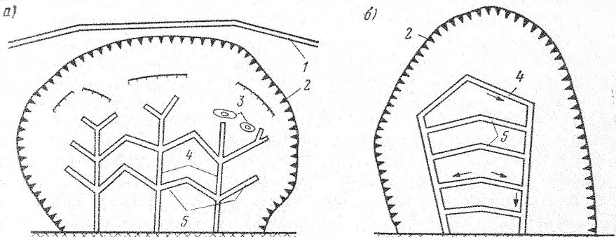
Рисунок 6.1 - Формирование устойчивого профиля склона
- 6.2.1.3 Изменение рельефа склона, как правило, следует предусматривать при отсутствии стесняющих условий, преимущественно при дисперсных породах, реже -при полускальных. В районах распространения многолетнемерзлых грунтов изменение рельефа допускается только при обосновании теплотехническими расчетами.
- 6.2.1.4 Срезку оползневых массивов и замену оползневых грунтов следует предусматривать для снижения нагрузок на удерживающие сооружения, а также в случаях, когда обеспечение их устойчивости оказывается неэффективным или экономически нецелесообразным. Срезку оползневых массивов следует предусматривать главным образом в верхней и средней части склона. Срезка и замена оползневых грунтов в нижней части допускаются при наличии предварительно возведенных удерживающих сооружений. При незначительных объемах земляных работ рекомендуется предусматривать полную срезку оползневых массивов.
6.2.1.5 При замене оползневых грунтов их сопряжение на участке примыкания к устойчивым коренным грунтам следует проектировать в виде небольших уступов с наклонными плоскостями.
6.2.1.6 Назначение рационального проектного профиля следует выполнять с учетом расположения характерных участков оползневого склона (зон выпора, заколов, трещин и других признаков членения оползня, верхней и нижней отметок стенок и ступеней срыва и пр.), а также крутизны устойчивых естественных склонов, имеющих аналогичные геологические и гидрогеологические условия. На участках развития консеквентных оползней при полускальных породах уположение следует проектировать с учетом падения основной выраженной системы поверхностей ослабления (трещин, слоистости).
6.2.1.7 Проектный профиль склона следует назначать на основании расчетов общей и локальной устойчивости по нескольким характерным профилям по фронту оползня в соответствии с указаниями 6.1.
6.2.1.8 Высокие откосы следует проектировать многоярусными с устройством промежуточных берм или террас с шагом по высоте не более 15 м. Ширину и положение промежуточных берм или террас следует назначать с учетом условий обеспечения общей и местной устойчивости склона, гидрогеологических и инженерно-геологических условий, требований к размещению на них сооружений и оборудования, организации работ при строительстве и эксплуатации. Как правило, ширину берм и террас на откосах следует назначать не менее 3 м.
6.2.1.9 Бермы и террасы следует проектировать на контактах пластов грунтов, а при наличии на склоне водоносных горизонтов - на отметке кровли водоупора. Планировку берм и террас следует проектировать с учетом требований к организации водоотведения в соответствии с указаниями 6.2.2.
6.2.2 Регулирование стока поверхностных вод
6.2.2.1 Регулирование стока поверхностных вод следует предусматривать для повышения устойчивости склонов за счет предупреждения их эродирующего воздействия на поверхность склона, исключения их аккумуляции в понижениях рельефа и предотвращения их инфильтрации в оползневые склоны.
6.2.2.2 Регулирование стока поверхностных вод следует осуществлять путем перехвата стока поверхностных вод с вышерасположенных прилегающих территорий, а также путем сбора и организованного отведения поверхностного стока непосредственно на оползневом участке. В пределах оползневого участка следует предусматривать наиболее совершенную систему водоотводных устройств для сбора и отведения стока за пределы оползневого участка. При сохранении на участке существующих водотоков следует предусматривать расчистку и укрепление их русел.
6.2.2.3 Регулирование стока поверхностных вод предусматривает организацию вертикальной планировки, обеспечивающей организованный свободный сток, совместно с устройством системы водосборных и водоотводных сооружений.
6.2.2.4 Организацию вертикальной планировки, обеспечивающей организованный свободный сток, следует осуществлять путем выравнивания поверхностей склонов, берм и террас, при необходимости - с приданием продольных и поперечных уклонов, таким образом, чтобы избежать возникновения бессточных участков.
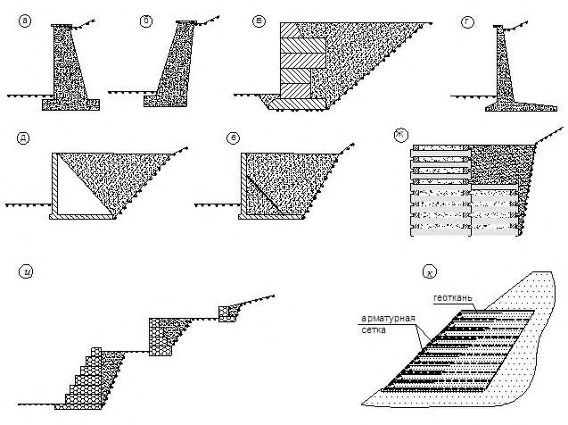
1 - нагорная канава; 2 - граница оползня; 3 - застои воды; 4 - магистральная канава; 5 - канава-осушитель
Рисунок 6.2 - Примеры организации водоотведения на оползневых участках по схеме «елочка» ( а ) и по схеме «решетка» ( б )
6.2.2.5 Продольный уклон берм и террас следует, как правило, назначать по требуемому уклону водоотводных лотков, обычно в пределах 0,003-0,005. Поперечный уклон берм и террас следует назначать к водоотводным лоткам в пределах 0,01-0,05.
6.2.2.6 Продольные и поперечные уклоны автомобильных дорог, площадок и иных сооружений следует назначать в соответствии с требованиями к их проектированию.
6.2.2.7 Системы водосборных и водоотводных сооружений следует проектировать в соответствии с требованиями СП 32.13330, СП 116.13330.
6.2.2.8 Существующие на участке водотоки следует по возможности сохранять и, при необходимости, предусматривать расчистку, углубление и укрепление их русел.
6.2.2.9 Как правило, пропуск стока поверхностных вод с прилегающих территорий следует предусматривать в обход оползневого склона. Сброс стока поверхностных вод с прилегающих территорий на оползневые склоны не допускается.
6.2.2.10 Перехват стока поверхностных вод с прилегающих территорий следует, как правило, предусматривать нагорными канавами, достаточно удаленными от верхней границы оползня. Трассировку нагорных канав следует выполнять в виде плавных кривых, без резких изломов и поворотов или в виде прямых таким образом, чтобы оползневой участок был оконтурен по всему периметру. При изменении направления трассы нагорных канав в плане сопряжение участков должно осуществляться плавными кривыми радиусом не менее 10 м и не менее 20 м на участках, где в силу больших уклонов предусматривается устройство перепадов, быстротоков. Основную нагорную канаву целесообразно проектировать с земляным валом из грунта, извлекаемого при ее разработке. При необходимости для перехвата и отвода стока с площади между нагорной канавой и границей оползня следует предусматривать дополнительные ограждающие канавы. Дно и низовой откос нагорных канав рекомендуется покрывать водонепроницаемым или мало водопроницаемым материалом, а верховой откос -укреплением, допускающим выход грунтовых вод в канавы.
6.2.2.11 На крутых продольных уклонах водостоков следует проектировать быстротоки -одноступенчатые, многоступенчатые, с водобойными колодцами или другими гасителями энергии, что определяется уклоном трассы и расчетными расходами стока.
6.2.2.12 На участках развития поверхностных сплывов и оплывин между верховым склоном и открытыми водоотводными сооружениями следует предусматривать полки шириной не менее 2 м.
6.2.2.13 Отведение поверхностного стока непосредственно в границах оползневого участка следует осуществлять путем устройства системы канавосушителей и магистральных канав. Канавы-осушители собирают воду из понижений, перехватывают небольшие ручьи, ключи и отводят их в магистральные канавы. Магистральные канавы в зависимости от рельефа местности следует располагать в центральной части оползневого участка или у его границ (варианты организации такой системы представлены на рисунке 6.2).
6.2.2.14 Для обеспечения лучших условий поверхностного водоотведения сеть канав-осушителей следует проектировать разветвленной, согласованной с рельефом склона, при этом их сечения следует предусматривать минимальными требуемыми.
6.2.2.15 Поперечные сечения канав-осушителей, как правило, следует назначать из конструктивных соображений, принимая ширину по дну 0,4 м, глубину до 0,6 м, заложение откосов 1:1,5. Во избежание потери устойчивости верхних слоев грунта заглубление канав более чем на 0,6 м не рекомендуется.
6.2.2.16 При размещении и выборе конструкций нагорных канав, канавосушителей, магистральных канав, выборе их конструкции и типа укрепления следует стремиться к минимизации инфильтрации воды в оползневой массив.
6.2.3 Регулирование стока подземных вод
6.2.3.1 Регулирование стока подземных вод следует предусматривать для повышения устойчивости склонов за счет предупреждения их эродирующего и разупрочняющего воздействия на грунты, снижения сопротивления сдвигу по поверхностям скольжения при смачивании, снижения гидростатического и фильтрационного давления.
6.2.3.2 Регулирование стока подземных вод следует предусматривать путем предотвращения или ограничения притока подземных вод, поступающих с прилагающих участков (в том числе трещинных вод), а также путем непосредственного осушения оползневого склона. Существующие на участке формы разгрузки подземных вод следует по возможности сохранять с устройством каптажей и предусматривать организованное отведение их стока.
6.2.3.3 При необходимости в границах водосборного бассейна следует предусматривать организационно-технические мероприятия по сокращению инфильтрационного питания подземных вод за счет ликвидации стихийного сброса хозяйственно-бытовых вод путем организации централизованного водоотведения в населенных пунктах, устранения протечек водонесущих инженерных сетей и водовмещающих сооружений, устранения влияния «мокрых» производств, регулирования полива сельскохозяйственных и декоративных насаждений и пр.
6.2.3.4 При необходимости для осушения оползневых массивов следует предусматривать мероприятия по интенсификации процессов разгрузки подземных вод за счет понижения базиса естественного дренирования путем расчистки и углубления русел водотоков и понижений в рельефе в случаях, если указанные мероприятия не приведут к активизации процессов абразии и линейной эрозии, а также не угрожают потерей устойчивости склона.
6.2.3.5 Перехват подземных вод, поступающих с вышерасположенной части водосборного бассейна, а также осушение оползневых массивов следует осуществлять с применением различных типов дренажей (траншейных, пластовых, трубчатых, галерейных, контрфорсных, дренажных штолен и др.) или водопонизительных скважин и колодцев (в том числе самоизливающихся и водопоглощающих).
6.2.3.6 Траншейные дренажи открытого (лотки, канавы, дренажные траншеи) и закрытого типов (траншеи, прорези, заполняемые фильтрационным материалом) следует, как правило, применять в качестве наружных дренажных устройств в верхних водоносных горизонтах для осушения оползневого тела, как правило, в виде временного мероприятия. После стабилизации оползневых подвижек временные дренажи ликвидируются и заменяются постоянными. При проектировании траншейных дренажей следует проверять устойчивость подсекаемого массива.
6.2.3.7 Пластовые дренажи следует применять для предотвращения суффозионного выноса грунта в зоне высачивания подземных вод, в целях понижения их уровня в приповерхностной части склона, а также в слабопроницаемых грунтах для перехвата и отвода утечек из локальных водовмещающих накопителей, хранилищ и емкостей. Пластовые дренажи следует проектировать в виде фильтрующей постели, соединенной с дренажным коллектором (траншейным или трубчатым). Толщину дренажного слоя обычно следует принимать не менее 150 мм, на грунтах мягкопластичной консистенции - не менее 200 мм.
6.2.3.8 Трубчатые и галерейные дренажи, дренажные штольни следует применять для долговременной эксплуатации в устойчивой зоне за пределами смещающихся грунтов для перехвата потока подземных вод или в зоне стабилизировавшегося оползня для поддержания его в осушенном состоянии. Для повышения эффективности дрены следует, как правило, располагать параллельно гидроизогипсам с уклоном не менее 0,003. Глубина заложения определяется условиями водопонижения, но должна быть не менее глубины промерзания. На прямолинейных участках через каждые 30-50 м, а также в местах пересечения, изменения уклона и направления, изменения диаметра труб следует предусматривать смотровые колодцы.
6.2.3.9 Трубы для дренажных устройств следует подбирать с учетом нагрузки, агрессивности грунтовых вод, а сечение - в соответствии с расчетными расходами. Грунтонепроницаемость дренажей следует обеспечивать однослойными или многослойными обратными фильтрами, выполняемыми из природных (гравий, щебень, песок) и (или) синтетических материалов.
6.2.3.10 На участках развития консеквентных оползней допускается проектирование контрфорсных дренажей, совмещающих несущие и дренажные функции. Контрфорсные дренажи следует проектировать из сухой каменной наброски, сухой кладки или габионов с заполнением пустот чистым крупнозернистым песком, а также комбинированными (с наружными стенами из сухой кладки или габионов с заполнением песком, гравием, щебнем).
Допускается самостоятельное применение щебня. В этом случае для повышения устойчивости в верхней части такого контрфорса следует предусматривать подпорную стену из сухой кладки или габионов.
При необходимости в основании контрфорсных дренажей следует предусматривать размещение дренажных труб с устройством обратного фильтра. Заглубление контрфорсного дренажа следует назначать ниже наиболее глубокой прогнозной поверхности скольжения.
6.2.3.11 Водопонизительные скважины и колодцы следует предусматривать в случаях, когда подстилающие грунты высокой водопроницаемости с безнапорными грунтовыми водами располагаются выше водоупора. Размещение водопонизительных скважин и колодцев определяется конкретными условиями строительной площадки и может реализовываться в виде отдельных локальных, контурных (замкнутых) или линейных (продольных или поперечных относительно склона) систем.
Самоизливающиеся скважины следует применять для снятия избыточного давления в напорных водоносных горизонтах. Конструкция самоизливающихся скважин аналогична конструкции водопонизительных скважин.
6.2.4 Закрепление грунтов
6.2.4.1 Закрепление грунтов следует применять в целях повышения устойчивости склонов за счет реализации методов технической мелиорации грунтов, сопровождающихся существенным изменением их физикомеханических свойств.
6.2.4.2 Закрепление грунтов в целях повышения устойчивости склонов в зависимости от инженерно-геологических условий необходимо выполнять следующими методами:
- инъекционным - путем нагнетания в грунт цементных или других химических растворов через погружаемые инъекторы или нагнетательные скважины (цементация, смолизация, силикатизация);
- буросмесительным механическим перемешиванием грунта с цементным раствором, цементом, известью или другими вяжущими в виде раствора или в сухом состоянии в процессе бурения без извлечения грунта на поверхность;
- струйным - разрушением грунта струей высокого давления в скважине и смешиванием его с цементным раствором или полным замещением грунта путем его вытеснения через устье скважины;
- термическим или термохимическим и электрохимическим способами за счет спекания грунтов в скважине высокотемпературными газами, электронагревом, электроосмосом, электрохимическим закреплением.
6.2.4.3 Форма и размеры закрепленных массивов, а также физикомеханические характеристики закрепленных грунтов устанавливаются исходя из инженерно-геологических и гидрологических условий площадки, принятого способа и технологии работ по закреплению, лабораторных и полевых опытно-производственных работ, а также результатов расчетного обоснования.
6.2.4.4 В зависимости от конкретных условий закрепление проводится во всем массиве оползневого тела; при наличии выраженного слабого слоя проводят его закрепление аналогично работе свай-шпонок. Кроме того, из закрепленного грунта в нижней части склона могут быть сформированы упорные призмы, выполняющие роль контрфорсов, а на самом склоне продольные и (или) поперечные зоны усиления в виде стен, разбивающие оползнеопасный участок на устойчивые элементы.
6.2.4.5 При использовании химического способа закрепления происходит существенное ухудшение фильтрационных свойств грунтов, что может приводить к подпору грунтовых вод и ухудшению оползневой обстановки. В этом случае, как правило, следует осуществлять дополнительные мероприятия по регулированию подземного стока грунтовых вод.
6.2.4.6 Разработку проектной и рабочей документации по закреплению грунтов на оползнеопасных территориях выполняют в соответствии с указаниями соответствующих разделов настоящего свода правил (в зависимости от конструктивного решения области закрепления), а также на основе требований и рекомендаций СП 22.13330, СП 45.13330.
6.2.5 Агролесомелиоративные мероприятия
6.2.5.1 Агролесомелиоративные мероприятия предусматриваются для повышения устойчивости склонов за счет армирования грунта корневой системой растений, осушения грунтов, предотвращения эрозии, выветривания, смывания и инфильтрации поверхностных вод в грунт, для чего выполняют одерновку склонов посевом многолетних трав и посадку кустарников и деревьев.
6.2.5.2 Агролесомелиоративные мероприятия следует применять для укрепления склонов крутизной не более 45°, сложенных легковыветривающимися (полускальными) грунтами и подверженных воздействию осыпных и эрозионных процессов. Укрепление склонов достигается путем повышения местной устойчивости, осушением грунта, предотвращением эрозии, уменьшением инфильтрации в грунт поверхностных вод, снижением воздействия выветривания, образования осыпей и вывалов за счет укрепления грунта и отведения излишней влаги корневой системой растений.
6.2.5.3 К агролесомелиоративным мероприятиям относят посадку деревьев, кустарников и лиан в сочетании с посевом многолетних трав или одерновкой, образующих покровно-барьерную систему посадок. Подбор растений, их размещение в плане, типы и схемы посадок следует назначать в соответствии с почвенно-климатическими условиями, особенностями рельефа и эксплуатации склона, а также с учетом требований к охране окружающей среды и эстетических требований. Посадку кустарников или деревьев, обладающих развитой корневой системой, необходимо комбинировать с посевом многолетних трав. Требования к проектированию агролесомелиоративных мероприятий приведены в [16].
6.2.5.4 Посев многолетних трав должен осуществляться по слою растительного грунта толщиной не менее 100 мм. При недостатке растительного грунта допускается покрывать выветрившиеся скальные склоны местным делювиальным грунтом с внесением комплекса минеральных удобрений. Посев многолетних трав на склонах крутизной до 35° допускается без других вспомогательных средств защиты, а при большей крутизне - с пропиткой грунта вяжущими материалами или с использованием биоматов. Технологичным решением является гидропосев - нанесение на склон под давлением жидкой смеси, состоящей из воды, семян, удобрений, мульчи и технических добавок.
6.2.5.5 Для участков, где были проведены агролесомелиоративные мероприятия, следует предусматривать уход и мониторинг их состояния. Уход за лесопосадками состоит в периодическом рыхлении почвы на глубину 50100 мм, удалении сорняков, восстановлении посадочного субстрата при необходимости.
6.3Удерживающие сооружения
6.3.1 Общие указания
6.3.1.1 Удерживающие сооружения подразделяются:
- а) по выполняемой функции:
- удерживающие оползневой массив,
- создающие стесненные условия смещению оползневого массива,
- защищающие отдельный объект и работающие в условиях обтекания грунтом; б) по расположению относительно защищаемого объекта:
- верховые (расположенные на верховом склоне),
- низовые (расположенные на низовом склоне),
- совмещенные (выполняющие функцию фундамента объекта);
- в) по мощности непосредственно удерживаемого массива:
- удерживающие всю оползневую толщу,
- удерживающие нижнюю часть оползневой толщи и создающие стесненные условия для грунта в условиях «переползания» им сооружения;
- г) по длине фронта удержания:
- перекрывающие весь оползневой массив,
- локальные (отдельностоящие) сооружения;
- д) по протяженности удерживаемого оползневого склона:
- одноярусные,
- многоярусные (расположенные в два яруса и более по длине оползня);
- е) по механизму работы:
- контрфорсы,
- массивные (гравитационные)сооружения,
- свайные сооружения,
- анкерные сооружения,
- комбинированные сооружения.
6.3.1.2 Расположение удерживающих противооползневых сооружений относительно защищаемого объекта определяется положением объекта на склоне. Если защищаемый объект расположен:
- в головной части потенциально оползневого массива -следует предусматривать устройство преимущественно низовых удерживающих сооружений;
- в срединной части - следует предусматривать устройство верховых, низовых удерживающих сооружений или их сочетания, в зависимости от прогнозируемого положения поверхности скольжения и соотношения размеров выемки и насыпи на защищаемом участке;
- в языковой части -следует предусматривать устройство преимущественно верховых удерживающих сооружений или низовых сооружений в сочетании с контрбанкетом.
Защитные противооползневые сооружения рекомендуется располагать непосредственно перед защищаемым объектом таким образом, чтобы максимально исключить влияние оползневого грунта на защищаемый объект.
В случае невозможности реализации технических решений по устройству верховых или низовых сооружений (например, при чрезмерных нагрузках на склон от защищаемого объекта) рекомендуется предусмотреть устройство непосредственно под объектом свайного удерживающего сооружения, совмещающего функции противооползневого сооружения и свайного фундамента.
6.3.1.3 Размещение противооползневых сооружений на склоне следует выбирать на основе расчетов устойчивости склона и анализа расположения поверхностей скольжения и эпюр оползневого давления, проводимых с учетом возможного многоярусного расположения сооружений.
6.3.1.4 В целях снижения оползневых давлений на каждый ярус удерживающих противооползневых сооружений рекомендуется увеличивать количество ярусов. Необходимое количество ярусов удерживающих сооружений определяется протяженностью удерживаемого оползневого склона из условия обеспечения локальной устойчивости грунтов склона между каждыми двумя смежными ярусами, а также общей устойчивости склона с учетом всех ярусов сооружений.
В целях снижения давления обтекания оползневой массы защитные противооползневые сооружения допускается устраивать под непрямым углом к вектору смещения оползневых грунтов или «клином».
6.3.1.5 Длина фронта удержания определяется поставленной задачей и технологической возможностью устройства конструктивных элементов, способных воспринять прогнозируемые оползневые усилия. Возможны следующие ситуации:
- ширина участка инженерной защиты сопоставима с шириной оползневого или оползнеопасного массива, длина фронта удержания относительно невелика - удерживающее сооружение должно перекрывать весь оползневой или оползнеопасный участок единой (сплошной) конструкцией и закрепляться в устойчивых грунтах за его пределами;
- ширина участка инженерной защиты сопоставима с шириной оползневого или оползнеопасного массива, длина фронта удержания велика допускается делить удерживающее сооружение на секции или отдельно стоящие сооружения. При этом следует учитывать эффект пространственного воздействия оползня с учетом различной жесткости отдельных секций;
- ширина участка инженерной защиты существенно меньше размеров оползневого массива в плане - удержание всего оползнеопасного массива в этом случае может быть нецелесообразно и следует применять отдельно стоящие сооружения для защиты локального объекта без обеспечения устойчивости всего оползневого (оползнеопасного) массива.
6.3.2 Контрфорсы
6.3.2.1 Контрфорсы в качестве самостоятельных сооружений следует применять в качестве упора для консеквентных оползней небольшой мощности (для восприятия горизонтальных сил) в случаях, когда нарушение естественных условий на участке должно быть минимальным.
6.3.2.2 Устройство контрфорсов, опирающихся на грунт основного деформируемого горизонта, представленных суглинками и глинами мягкопластичной и текучепластичной консистенции, не рекомендуется.
6.3.2.3 Контрфорсы следует располагать в нижней части склонов или у подошвы склонов с шагом, определяемым по результатам расчетов устойчивости, при условии отсутствия выпирания грунта между ними и потери устойчивости по поверхностям скольжения, проходящим выше и ниже их верха и подошвы соответственно. Заглубление контрфорсов следует назначать ниже наиболее глубокой прогнозной поверхности скольжения таким образом, чтобы обеспечить по ней дополнительное сопротивление сдвигу.
6.3.2.4 Поперечное сечение контрфорсов следует назначать постоянным по высоте или с увеличением от верха к основанию плавно или уступами. Продольное сечение контрфорсов следует назначать с учетом расположения прогнозных поверхностей скольжения или высоты основного деформируемого горизонта. Верх контрфорсов обычно следует проектировать в одном уровне с поверхностью земли, а основание - в одном уровне или в виде уступов.
6.3.2.5 Для повышения устойчивости контрфорсов против сдвига по основанию рекомендуется предусматривать их врезку в коренные породы.
6.3.2.6 Контрфорсы рекомендуется проектировать из каменной, бутовой или сухой кладки, габионов, бетонными, бутобетонными и железобетонными. Допускается применение грунтовых контрфорсов, укрепленных камнем.
6.3.3 Массивные (гравитационные) сооружения
6.3.3.1 Гравитационные сооружения выполняют в виде перепадных конструкций на различных участках склона. а также в виде контрбанкета, пригружающего нижнюю часть оползневого тела. Основное условие их использования - опирание подошвы на прочные грунты, расположенные вне зоны сдвигаемого массива. Применяются, как правило, массивные монолитные конструкции с вертикальной и наклонной гранью (рисунок 6.3, а , б ) из кладки бетонных массивов или каменной кладки (рисунок 6.3, в ), железобетонные уголковые стенки (монолитные и сборные) консольного типа, контрфорсные и с внутренней анкеровкой (рисунок 6.3, г -е ), ряжевые конструкции из сборных железобетонных элементов (рисунок 6.3, ж ), конструкции из габионов (рисунок 6.3, и ), а также армогрунтовые насыпи и подпорные стены с использованием георешеток, геосеток, геотекстиля и других геосинтетических материалов (рисунок 6.3, к ), с облицовкой и без нее.
В целях повышения устойчивости гравитационных конструкций и увеличения высоты удерживающего склона в их состав могут включаться свайные и (или) анкерные элементы.
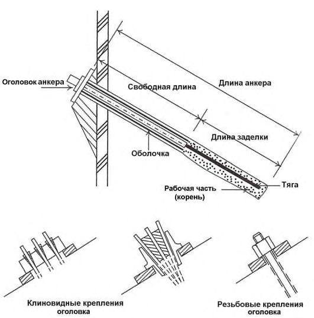
а , б - монолитные с вертикальной и наклонной гранью; в - из бетонных блоков и каменной кладки; г , д , е - уголковые стенки; ж - ряжевые; и - габионные; к - армогрунтовые насыпи
Рисунок 6.3 - Массивные (гравитационные) сооружения
- 6.3.3.2 Контрбанкеты (упорные призмы) следует применять главным образом для стабилизации инсеквентных оползней при наличии явной, близкой к круглоцилиндрической, поверхности скольжения, для борьбы с оползнями выдавливания, а также в качестве упора для консеквентных оползней (для восприятия горизонтальных сил). Контрбанкеты также рекомендуются к применению:
- на участках, примыкающих к водоемам, совмещая функции противооползневых и берегоукрепительных сооружений;
- на участках со значительной глубиной промерзания грунтов, подверженных морозному пучению, на участках распространения многолетнемерзлых грунтов.
6.3.3.3 Устройство контрбанкетов при грунтах основного деформируемого горизонта, представленных суглинками и глинами мягкопластичной, текучепластичной и текучей консистенции, не рекомендуется.
6.3.3.4 При стабилизации инсеквентных оползней для достижения максимального эффекта увеличения удерживающих сил под действием собственного веса грунта контрбанкетов их следует располагать над восходящей ветвью поверхности скольжения или в зоне ее выхода на поверхность - в пассивной зоне оползней или у подошвы склонов. При этом низовую границу контрбанкета следует располагать за пределами языка оползня во избежание выдавливания грунта по новой поверхности скольжения.
6.3.3.5 При стабилизации консеквентных оползней следует предусматривать размещение контрбанкета у основания склона таким образом, чтобы его призма находилась на продолжении прогнозной поверхности скольжения для обеспечения дополнительного сопротивления сдвигу по ней, в том числе за счет собственного веса грунта контрбанкета (при этом центр тяжести контрбанкета должен располагаться выше наиболее глубокой прогнозной поверхности скольжения). При необходимости такие контрбанкеты могут быть дополнены контрфорсами или контрфорсными дренажами. Допускается устройство контрбанкетов в средней части склонов при условии обеспечения устойчивости низового склона.
6.3.3.6 Оптимальным поперечным сечением контрбанкета при прочих равных условиях является такое, при котором устойчивость склона обеспечивается при минимальном его объеме. При проектировании контрбанкетов рекомендуется избегать высоких профилей с коротким основанием и низких профилей с длинным основанием в связи с их неэффективностью. Допускается проектирование контрбанкета сечением более требуемого, если это требуется для увязки с соседними поперечниками. При назначении параметров поперечного сечения контрбанкета следует учитывать особенности организации производства работ по его возведению.
6.3.3.7 Верхнюю часть контрбанкета рекомендуется проектировать в виде террасы. Высокие откосы контрбанкетов следует проектировать многоярусными, с устройством промежуточных берм. Планировку берм и террас контрбанкетов, мероприятия по водоотведению следует выполнять в соответствии с требованиями 6.2.1, 6.2.2.
6.3.3.8 Для повышения сопротивления контрбанкетов сдвигу по основанию рекомендуется предусматривать их врезку в коренные породы с устройством уступов шириной 2-3 м и высотой, изменяющейся в зависимости от уклона склона. Как правило, врезку целесообразно проектировать во всех случаях при незначительной глубине залегания коренных пород (до 3 м).
6.3.3.9 В условиях глубокого залегания коренных пород при наличии в основании контрбанкетов слабых грунтов следует предусматривать их удаление или замену.
6.3.3.10 Врезка контрбанкетов в коренные породы, а также удаление или замена слабых грунтов в их основании допускаются, если по условиям устойчивости склона возможна его кратковременная подрезка на период производства работ.
6.3.3.11 Контрбанкеты, как правило, следует проектировать в виде единой протяженной призмы. Допускается применение контрбанкетов с разрывами по ширине склона (в виде широких контрфорсов).
6.3.3.12 Для устройства контрбанкетов следует отдавать предпочтение дренирующим грунтам, в том числе крупнообломочным. При устройстве контрбанкетов из слабопроницаемых местных грунтов, а также при выклинивании в тело проектируемого контрбанкета водоносного горизонта дополнительно следует предусматривать дренажи из камня, щебня и габионов в теле и основании контрбанкета, а также наслонный дренаж по поверхности существующего склона.
6.3.3.13 При необходимости ограничения полосы отвода контрбанкеты следует возводить из армированных грунтов или поддерживать их низовые откосы подпорными стенами.
6.3.3.14 Допускается применение контрбанкетов с полной засыпкой оползневых логов при условии организации водопропускных сооружений по их тальвегам, при этом контрбанкет создает дополнительный отпор оползневому давлению благодаря распору между бортами.
6.3.3.15 Сброс на контрбанкеты вод с прилегающих территорий не допускается.
6.3.3.16 Требования к укреплению наружного откоса контрбанкета с учетом механизма переформирования берегового склона и динамики развития оползневых процессов, если наружный откос контрбанкета подвергается морской или речной абразии, приведены в СП 80.13330, [8].
6.3.3.17 Для проведения предварительных расчетов общей устойчивости в первом приближении рекомендуется принимать высоту контрбанкета, равную 1/3 высоты поддерживаемого склона, а ширину верхней террасы контрбанкета - не менее 3 м. По результатам предварительных расчетов указанные размеры затем следует уточнять методом итерационных приближений.
6.3.3.18 При проектировании контрбанкетов с заменой грунтов следует отдельно проверять устойчивость их откосов.
6.3.3.19 Возведение контрбанкетов следует выполнять при оптимальной влажности, выполняя послойное уплотнение грунтов, достигая коэффициента уплотнения не менее 0,98 (за исключением крупнообломочных грунтов). Работы по удалению или замене слабых грунтов в основании контрбанкета следует выполнять короткими чередующимися захватками.
6.3.3.20 Расчеты массивных удерживающих сооружений в зависимости от инженерно-геологических условий и используемых конструкций включают расчеты общей устойчивости (несущей способности грунтового основания) и расчеты местной устойчивости:
- на сдвиг по подошве сооружения;
- на смешанный сдвиг;
- на опрокидывание;
- на внутреннюю устойчивость (для сооружений из армированного грунта, габионов);
- на сдвиг с поворотом в плане (для секций, нагруженных с эксцентриситетом).
Для конструкций из каменной кладки и бетонных массивов должна быть проведена проверка на сдвиг и опрокидывание по штрабам (швам).
Расчеты выполняют в соответствии с указаниями СП 22.13330, СП 58.13330, а также с использованием континуальных моделей грунта МКЭ.
6.3.3.21 Деформационные расчеты сооружений в целях определения осадки, горизонтального смещения и крена проводят по указаниям СП 22.13330, СП 58.13330.
6.3.3.22 Расчет несущих элементов конструкции по прочности (первая группа предельных состояний) проводят на расчетные значения действующих усилий от нагрузки (сила, момент), а также, при необходимости, на усилия, возникающие при температурных деформациях.
6.3.3.23 Расчеты подпорных стен уголковой конструкции включают расчеты прочности и трещиностойкости:
- фундаментной плиты;
- вертикального элемента (стенки);
- анкерной тяги, узлов крепления и соединений анкерных тяг.
6.3.3.24 Расчет конструкций из габионов, армогрунта с использованием георешеток, геотекстиля, геосеток следует проводить на основе профильных программ, как правило, с использованием континуальных упругопластических моделей грунта МКЭ, в которых предусмотрена возможность моделирования элементов армирования и определения в них расчетных усилий.
6.3.3.25 Предельное значение бокового откосного давления грунта на противооползневые сооружения (горизонтальная и вертикальная составляющие активного Ea и пассивного Ep давления), а также значение давления грунта в покое Eo определяют в соответствии с указаниями СП 22.13330 и СП 101.13330. При расчетах МКЭ обязательно выполнение тестовых расчетов методами теории предельного равновесия с контролем обобщенного силового воздействия бокового давления грунта на сооружения ( Ea и (или) Ep ). При определении значений бокового давления грунта на сооружение и его элементы для расчетов по первой группе предельных состояний следует использовать значения прочностных и деформационных характеристик грунтов - I , с I , Е I; для расчетов по второй группе - II , с II , Е н .
6.3.3.26 Расчеты с учетом сейсмических воздействий выполняют в соответствии с рекомендациями СП 14.13330 и СП 101.13330.
При этом следует осуществлять перебор направлений сейсмического воздействия в целях определения наибольшей величины бокового давления грунта.
6.3.4 Свайные сооружения
6.3.4.1 Свайные конструкции, включая продольные удерживающие стены, целесообразно использовать в случаях, когда имеется подстилающий прочный слой грунта, в который возможна заделка нижних концов свай.
6.3.4.2 Однорядное расположение (рисунок 6.4, а ), соответствующее консольной схеме работы сваи, применяется при сравнительно небольшой мощности оползневого тела (до 5-6 м). С ее увеличением следует раскреплять ряд из буровых свай грунтовыми анкерами, что позволит снизить перемещения удерживающих конструкций и внутренние усилия в сваях, или переходить на двухрядные и многорядные конструкции (рисунок 6.4, б , в , г ), работающие по рамной схеме. Головы свай в этом случае объединяются железобетонным ростверком, на котором дополнительно может устраиваться подпорная стенка
6.3.4.3 В качестве свай, как правило, используют буронабивные сваи большого диаметра. В отдельных случаях допускается применять наклонные буроинъекционные сваи, располагаемые по козловой схеме. Забивные сваи заводского изготовления допускается применять при незначительной мощности оползней и только при погружении их в лидерные скважины или методом вдавливания.
6.3.4.4 С увеличением глубины потенциального оползня и возрастанием нагрузки на сваи целесообразно использовать свайно-контрфорсные конструкции (продольные стены или баретты) (рисунок 6.4, д ), которые по аналогии со свайными могут быть однорядными, двухрядными и многорядными, с ростверковой частью и без нее. Выполняются баретты шахтным способом, а также более прогрессивным -буровым из буросекущихся или бурокасательных свай большого диаметра ( D ≥ 600 мм), а также методом «стена в грунте». На застраиваемой территории свайные и бареттные противооползневые конструкции могут совмещаться с фундаментами зданий и сооружений, а также служить основанием автомобильных дорог и инженерных коммуникаций (если нет других условий и требований).
6.3.4.5 Расположение свай и баретт на склоне должно исключать обтекание и продавливание грунта, что достигается выбором соответствующего расстояния между ними, расстановкой в шахматном порядке, а также устройством верховой или низовой (что предпочтительней) грунтоудерживающей стенки.
6.3.4.6 В отдельных случаях при выраженной поверхности скольжения оползневого массива, проходящей в слое слабого грунта ограниченной мощности (как правило, не более 1,5-2,0 м), могут быть использованы сваишпонки, выполняемые буровым способом (рисунок 6.4, е ).
6.3.4.7 Шпонки применяют для предотвращения возникновения консеквентных оползней при сравнительно небольшой мощности основного деформируемого горизонта и возможности заделки в прочные коренные породы.
6.3.4.8 Расположение шпонок в плане обычно предусматривается в шахматном порядке. Расстояние между шпонками, глубина заделки в прочные коренные породы устанавливаются расчетами из условия недопущения продавливания грунта между шпонками, их среза, чрезмерного изгиба, а также образования поверхностей скольжения ниже их концов. Положение верха шпонок устанавливается из условия обеспечения устойчивости массива выше их голов.
6.3.4.9 Шпонки следует проектировать в виде железобетонных столбов или призм, устраиваемых через шурфы или скважины, с размещением их верхней части в оползневом массиве, а нижней - в устойчивых, прочных грунтах ниже поверхности скольжения.
6.3.4.10 После устройства шпонок следует предусматривать их омоноличивание цементно-песчаным раствором, а выработки над ними заполнять местным глинистым грунтом с тщательным уплотнением.
6.3.4.11 Проектирование свайного противооползневого сооружения осуществляется, как правило, методом последовательных приближений и вариантного проектирования, что связано с многофакторностью решаемой задачи и необходимостью определения большого количества взаимосвязанных и изначально неизвестных параметров конструкции: количество свай; их расположение, в том числе количество рядов свай, расстояние между сваями в ряду и между рядами; диаметр, длина и армирование (для железобетонных свай); целесообразность использования наклонных, буросекущихся свай или контрфорсных свайных конструкций.
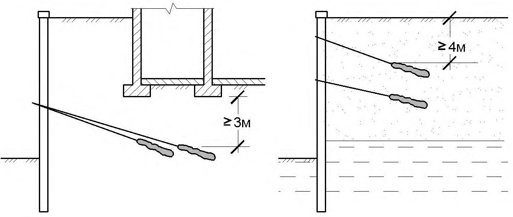
а - однорядные; б , в , г - многорядные; д - контрфорсные; е - сваи-шпонки; 1 - поверхность скольжения; 2 -сваи (баретты); 3 - ростверки; 4 - грунтоудерживающая стенка
Рисунок 6.4 - Свайные конструкции
6.3.4.12 Выбор состава расчетов конкретного конструктивного решения противооползневого сооружения должен учитывать специфику выполняемой функции и условий работы конструкции на склоне:
- давление грунта на сооружение определяется величиной активного давления оползневого массива, действующего перпендикулярно оси сооружения (фронтально), а также под определенным углом или в условиях обтекания свай оползневыми массами;
- расстояние между сваями в ряду и необходимое количество рядов определяются из условия непродавливания грунта между смежными сваями при направлении вектора оползневого давления перпендикулярно оси сооружения;
- оценку общей устойчивости сооружения проводят с учетом поверхностей скольжения, проходящих ниже концов свай;
- расстояние между смежными сооружениями определют из условия обеспечения пространственной устойчивости участка склона между ними.
6.3.4.13 Расчет шага свай и контрфорсов из условия непродавливания грунта следует выполнять в соответствии с теорией пластичности.
6.3.4.14 В расчетах многорядных свайных конструкций, оказывающих сопротивление продавливанию грунта, необходимо учитывать, что распределение давлений грунта между рядами свай носит неравномерный характер и существенно зависит от прочностных свойств грунтов и конфигурации свайного поля.
6.3.4.15 Распределение давления между сваями может быть определено по соответствующим графикам, полученным экспериментальным и расчетным путем, по зависимостям взаимовлияния свай в составе группы (СП 24.13330), а также численными методами с использованием трехмерных (пространственных) решений МКЭ.
6.3.4.16 Давление грунта на сооружение в соответствующих пропорциях прикладывается к сваям каждого ряда в пределах их свободной длины, в виде распределенных по глубине нагрузок.
6.3.4.17 Расчет внутренних усилий свайной противооползневой конструкции допускается проводить аналитическими и численными методами (МКЭ, метод конечных разностей, методы коэффициента постели и т. д.). Расчеты могут проводиться как вручную, так и с привлечением программных средств (в том числе комплексных, учитывающих взаимодействие конструкции с грунтами склона). При этом используемые методы должны учитывать все основные требования СП 24.13330 по расчету свайных фундаментов, в том числе:
- по расчету несущей способности свай;
- по расчету осадок свай и свайных кустов;
- по расчету свай на действие горизонтальных и моментных нагрузок.
- 6.3.4.18 Расчет и конструирование железобетонных свайных конструкций (свай и свайных ростверков) проводят согласно требованиям СП 24.13330 и СП 63.13330; при использовании металлических свай - согласно СП 16.13330.
- 6.3.4.19 Применение забивных и вибропогружаемых свай допускается в случаях, когда производство работ не ухудшает условий устойчивости склона (откоса) и обеспечивает плотное примыкание грунта к свае у поверхности земли.
- 6.3.4.20 Если свайные конструкции предполагается сочетать с грунтовыми анкерами, то поперечное армирование свай следует выполнять из арматуры того же класса, что и продольное.
6.3.5 Анкерные сооружения
- 6.3.5.1 Анкерное и (или) нагельное крепление применяется для закрепления неустойчивых участков грунтовых и скальных склонов и откосов в качестве самостоятельных удерживающих сооружений с локальными упорными элементами (шайбами, плитами, балками, поясами и т. д.), с использованием сплошных металлических, железобетонных или сетчатых покрытий, а также в сочетании с подпорными стенами, гравитационными, свайными и бареттными конструкциями (рисунки 6.5, 6.6).
- 6.3.5.2 Основным условием применения анкерных конструкций является наличие на достаточном расстоянии прочных грунтов, в которых располагается корневая часть анкера. В практике строительства применяются грунтовые анкеры (анкерные сваи) длиной от 10-15 м до 50-60 м и более.
- 6.3.5.3 По назначению анкеры подразделяются на две категории: временные -используемые в строительный период и постоянные -обеспечивающие устойчивость строительного объекта на весь период эксплуатации.
- 6.3.5.4 В конструктивном отношении временные и постоянные анкерные конструкции не имеют принципиального отличия, за исключением степени защиты от коррозии.
- 6.3.5.5 Основными конструктивными элементами анкеров являются (рисунок 6.7):
- оголовок - часть анкера, обеспечивающая его закрепление в опорной конструкции или сооружении с последующим натяжением;
- анкерная тяга - напрягаемый элемент, передающее растягивающее усилие от анкеруемого сооружения в анкерную заделку (корень);
- анкерная заделка - корневая часть анкера, обеспечивающая передачу выдергивающего усилия от сооружения окружающему грунту.
- 6.3.5.6 По способу устройства и принципу взаимодействия с грунтом анкерной заделки анкеры подразделяются на буроинъекционные и якорные (самораскрывающиеся). а - с опорной плитой; б - с поясами в виде балок; в - в составе однорядного или многорядного ростверка; г -для крепления подпорной стены; д - для крепления подпорной стены на свайном фундаменте; е - для крепления столбчатой (контрфорсной) конструкции
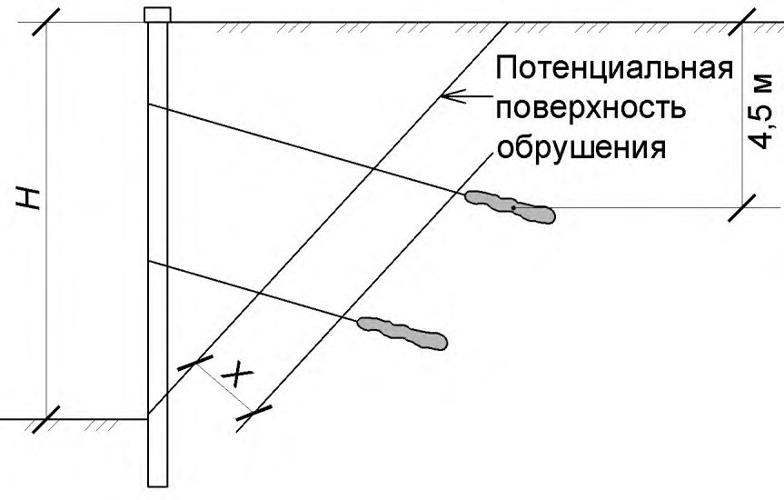
Рисунок 6.5 - Анкерные удерживающие конструкции
Рисунок 6.6 - Нагельное крепление с упорными плитами
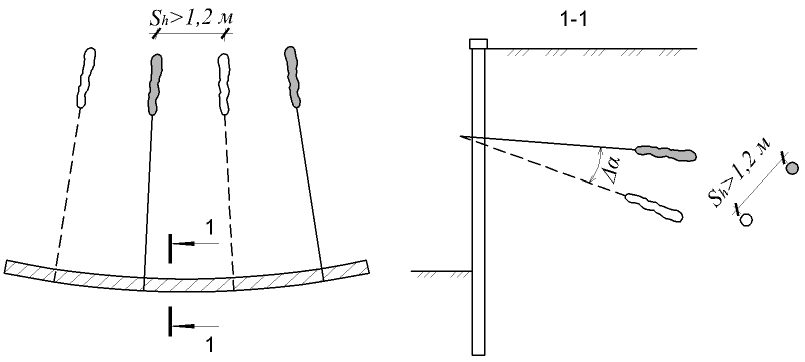
ан ке ра ра
Рисунок 6.7 - Принципиальная конструкция инъекционного анкера
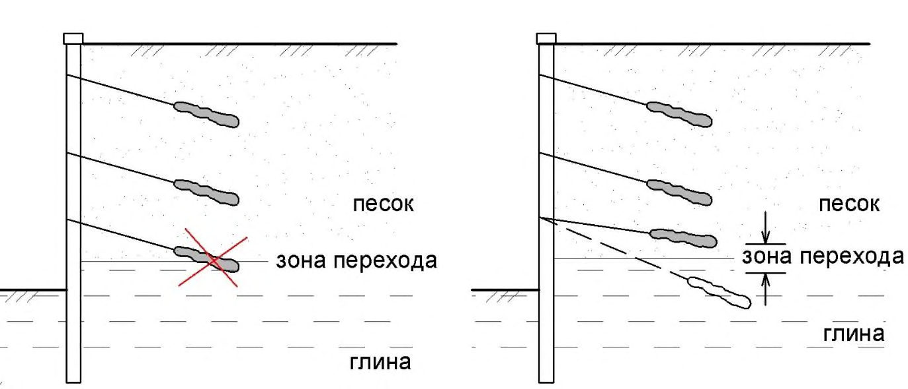
6.3.5.7 К буроинъекционным относятся анкеры, устраиваемые в буровых скважинах с последующим формированием анкерной заделки фиксированной длины методом нагнетания цементного раствора (одноразовая или двухразовая цементация). По технологии устройства буроинъекционные анкеры подразделяются на буроопускные - анкерная тяга погружается в предварительно пробуренную скважину (с обсадной трубой или заполненную цементно-песчаным раствором) и самозабуриваемые - буровая колонна остается в скважине по окончании проходки и выполняет функцию анкерной тяги.
6.3.5.8 В качестве анкерной тяги используются: стальные арматурные стержни, стальные тросы, металлические трубы буровых колонн, стекло- и базальтопластиковая арматура.
6.3.5.9 К самораскрывающимся анкерам относятся грунтовые анкеры, корневая часть которых формируется раскрытием якорной системы (упорная плита, лопасти и т. д.) после погружения на заданную глубину. Погружение осуществляется забивкой или вдавливанием под любым углом от вертикального до горизонтального.
6.3.5.10 Нагельное крепление (см. рисунок 6.6) используется для повышения устойчивости вертикальных и крутонаклонных грунтовых откосов за счет укрепления грунтового массива системой армирующих стержней (грунтовых нагелей) и устройства наружной облицовки, соединяемой с нагелями. Нагельное крепление следует применять при сравнительно небольших объемах оползневых тел. Принципиальное отличие нагеля от анкера заключается в отсутствии предварительного натяжения и формируемой корневой части.
6.3.5.11 Нагели выполняются из стержневой арматуры периодического или винтового профиля диаметром 12-28 мм. Их погружение в грунт осуществляется забивкой, вдавливанием или установкой в буровые скважины, заполненные цементным раствором. По аналогии с анкерным креплением допускается применять трубчатые винтовые нагели с теряемой буровой коронкой, погружение которых осуществляется буровым способом (нагель в данном случае является буровой колонной) с последующим заполнением скважины цементным раствором.
Крепление поверхности откоса осуществляется: нанесением набрызгом бетонного покрытия; устройством рамной конструкции из сборного железобетона, состоящей из горизонтальных и вертикальных балок; установкой сборных железобетонных плит; покрытием сетками, геотекстилем и другими синтетическими материалами.
6.3.5.12 При проектировании анкерных конструкций должны быть выполнены следующие виды расчетов:
- расчеты общей устойчивости сооружения;
- деформационные расчеты системы «сооружение-анкерное крепление» (численными методами);
- расчеты несущей способности анкера по грунту и прочности по материалу;
- расчеты прочности отдельных элементов, входящих в состав анкера (оголовок, замок, упорная плита и т. д.).
При этом должны быть обеспечены следующие требования:
- достаточная несущая способность анкера для восприятия усилий, передаваемых от удерживаемого сооружения, с требуемыми коэффициентами запаса;
- расположение зоны заделки анкера (корня) за пределами призмы обрушения или потенциального оползневого массива;
- достаточный уровень коррозионной защиты анкера и узла крепления к сооружению с учетом эксплуатационного срока службы.
6.3.5.13 При проектировании грунтовых анкеров определяются:
- число ярусов анкерного крепления, число анкеров в каждом ярусе, их шаг и угол наклона;
- свободная длина анкерной тяги, обеспечивающая размещение заделки (корня) анкера в несмещаемую зону грунтового массива;
- диаметр и длина корневой части анкера (заделки), необходимые для восприятия расчетных нагрузок;
- места для установки опытных анкеров и программа пробных испытаний для окончательного подтверждения или корректировки принятой конструкции.
6.3.5.14 Кроме того, в составе проектной и рабочей документации наряду с пробными должны быть предусмотрены контрольные и приемочные испытания анкеров. Требования к разработке программы испытаний приведены в [14], [17].
Обеспечение эксплуатационной надежности сооружения следует обеспечивать путем сочетания расчетно-конструктивных мероприятий с натурными испытаниями анкеров. Обеспечение эксплуатационной надежности сооружения только за счет расчетно-конструктивных мероприятий допускается в исключительных случаях для временных сооружений в труднодоступных местах, если их разрушение не связано с риском для жизни людей или причинения социально-экономического ущерба.
6.3.5.15 Расчеты общей устойчивости выполняют в зависимости от типа и конструкции анкерного сооружения согласно указаниям соответствующих пунктов настоящего раздела. В результате расчетов определяются основные габариты сооружения, а также расчетная нагрузка на анкер, его длина и расположение корневой части.
- 6.3.5.16 Деформационные расчеты системы «сооружение - грунтовый массив -анкерное крепление» выполняют в целях определения всех расчетных усилий, действующих на элементы сооружения и анкера с учетом их жесткости и податливости при взаимодействии с грунтовым массивом. При расчетах аналитическими или численными методами (с использованием контактных или континуальных упругопластических моделей грунта) жесткость и несущая способность анкерного крепления на выдергивание может быть определена расчетом, а также по материалам испытания анкеров в аналогичных грунтовых условиях с обязательной последующей корректировкой по результатам пробных испытаний на строительной площадке.
6.3.5.17 Для расчета несущей способности и прочности анкера условие (5.1) СП 116.13330.2012 принимает вид:
где F, R, n - то же, что в условии (5.1) СП 116.13330.2012;
с - коэффициент условий работы, численно равный ψ в условии (5.1) СП 116.13330.2012;
d,a - коэффициент условий работы, учитывающий степень точности определения анкерного усилия; принимает значения:
d,a = 0,85 - для постоянных анкеров,
d,a = 0,95 - для временных анкеров;
d - коэффициент условий работы анкера в грунтовом массиве, учитывающий степень точности определения его несущей способности:
d = 0,75 и d = 0,85 - для постоянных анкеров при определении несущей способности расчетом и по результатам испытаний соответственно,
d = 0,85 и d = 0,95 - для временных анкеров при определении несущей способности расчетом и при испытаниях,
d = 0,85 и d = 0,95 - для расчета прочности постоянных и временных анкеров соответственно.
- 6.3.5.18 Указания по расчету несущей способности анкера на выдергивание (по грунту) приведены в [14], [17], [18]. Использование метода, представленного в [14], предпочтительно.
- 6.3.5.19 Расчет прочности анкерного крепления в зависимости от материала анкерной тяги проводят в соответствии с указаниями СП 16.13330, СП 28.13330, ГОСТ 5781, ГОСТ 2688.
6.3.5.20 При разработке и выполнении работ по устройству грунтовых анкеров должны быть проведены комплексные испытания анкеров, включающие пробные, контрольные и приемочные испытания. Требования к определению состава и методики испытаний в программе работ приведены в [14].
Кроме того, для сооружений повышенной ответственности должны быть предусмотрены мероприятия по осуществлению регулярного контроля за деформациями противооползневого сооружения и грунтовыми анкерами. Требования к разработке таких мероприятий приведены в СП 58.13330, СП 22.13330, СП 23.13330, [14].
6.3.5.21 Разрушающую силу, которая используется при разработке проектной и рабочей документации, следует принимать такой, чтобы она не превышала предела прочности анкера на разрыв в конце выбранного расчетного срока службы с учетом припуска на коррозию.
6.3.5.22 При расчете рабочего усилия в анкере должна быть принята меньшая из характеристик: а) предел текучести при растяжении; б) предельно допустимая деформация при растяжении.
6.3.5.23 При изготовлении анкеров в качестве альтернативы цементному раствору допускается применять полимеры и полимерные растворы при условии, что их пригодность к применению подтверждена документом по оценке соответствия. Для проверки качества смеси, времени схватывания и характеристик должны быть проведены лабораторные и полевые исследования.
6.3.5.24 Применение неизвлекаемых обсадных труб следует ограничивать в свайно-анкерных сооружениях. Применение неизвлекаемых обсадных труб как исключение допускается с согласия застройщика (технического заказчика) в сложных геологических условиях только до отметки верха заделки сваи. В случае если применяется неизвлекаемая обсадная труба вторичного использования, не допускается учитывать ее изгибную жесткость в расчете. В случае если неизвлекаемая труба новая и расчетный срок службы ее антикоррозионного покрытия совпадает со сроком службы сооружения, допускается передача нагрузки от анкера через нее.
6.3.5.25 Расстояние от подошвы фундамента или края подземной части сооружения до ближайшей точки корня грунтового анкера должно быть не менее 3 м (рисунок 6.8, а ), а от поверхности планировки или естественного склона - не меньше 4 м (рисунок 6.8, б ). а б
Рисунок 6.8 - Минимальное расстояние до корня анкера
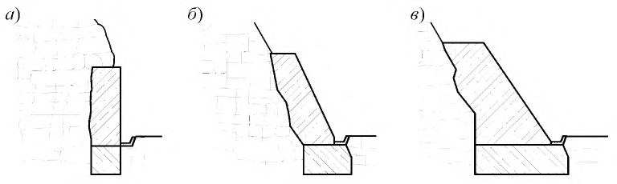
6.3.5.26 Расстояние от этих же объектов до центра корня грунтового анкера должно быть не менее 4,5 м (рисунок 6.9).
6.3.5.27 Заделка анкера (корень) должна располагаться за пределами расчетной зоны обрушения, выпора или поверхности грунта. Расстояние от любой расчетной поверхности обрушения до корня анкера должно быть не менее 1,5 м или 0,2 H , где Н - наибольшая высота удерживаемого массива за период строительства и эксплуатации сооружения с учетом устройства временных траншей или прогнозного подмыва нижнего рельефа (см. рисунок 6.9).
6.3.5.28 Расстояние между корнями параллельных анкеров в плане должно быть не менее трех диаметров корня анкера, но не менее 1,2 м.
6.3.5.29 Если на криволинейных участках сооружений не удается обеспечить расстояние Sh между анкерами одного яруса более 1,2 м, то необходимо менять углы наклона анкеров ∆α так, чтобы соблюдалось минимальное расстояние между корнями с учетом технологической погрешности на устройство скважины в данных грунтах (рисунок 6.10).
6.3.5.30 Запрещено располагать корень анкера на границе песчаных и глинистых инженерно-геологических элементов (ИГЭ) (рисунок 6.11).
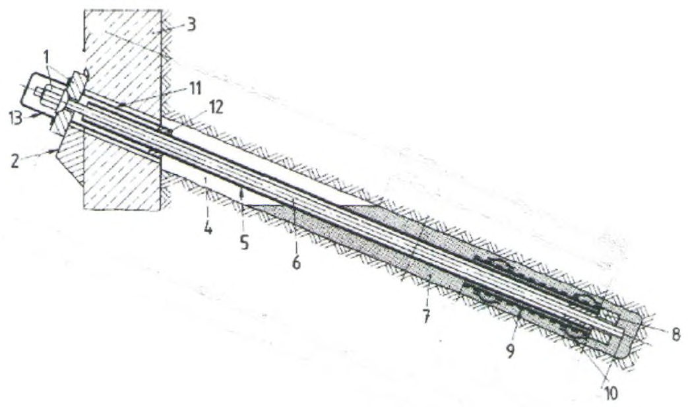
x = 1,5 м или 0,2 H
Рисунок 6.9 - Минимальное заглубление корня анкера
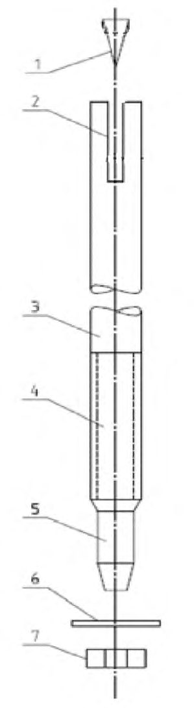
Рисунок 6.10 - Расположение анкеров на криволинейных участках сооружения
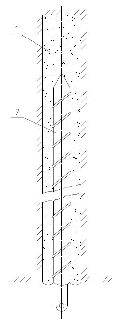
а - недопустимое расположение анкера; б - допустимое расположение
Рисунок 6.11 - Расположение анкеров на границе ИГЭ
6.3.5.31 Для повышения эффективности противооползневые анкерные сооружения следует, как правило, сочетать с систематическим дренажом.
6.3.5.32 Сооружение должно перекрывать по возможности весь оползневой или оползнеопасный участок единой (сплошной) конструкцией и закрепляться в устойчивых грунтах за его пределами.
При необходимости допускается делить сооружение на секции или применять в пределах оползневого (оползнеопасного) участка отдельно стоящие сооружения. При этом следует учитывать эффект пространственного воздействия оползня с учетом различной жесткости отдельных секций. Анкеры соседних секций не должны проходить ближе 3 м к расчетной поверхности смещения соседних отдельно стоящих секций.
6.3.5.33 Конструкция деформационных швов должна исключать поперечные смещения смежных секций относительно продольной оси сооружений.
6.3.5.34 Следует избегать расположения деформационных швов в местах максимальных оползневых нагрузок (например, в середине оползневого участка).
6.3.5.35 В облицовочных панелях с большой поверхностью нагрева в районах со значительной амплитудой температурных колебаний следует предусматривать температурно-деформационные швы. Частоту расположения температурно-деформационных швов следует назначать по результатам расчета температурных деформаций удерживающего сооружения или назначать из конструктивных соображений по требованиям соответствующих сводов правил.
6.3.5.36 При наличии расчетного обоснования допускается использовать облицовочную панель в качестве распределительной балки анкеров.
6.3.5.37 Кроме вышеперечисленных испытаний проектной и рабочей документацией могут предусматриваться другие виды испытаний (стендовые и т. д.), обусловленные особенностями конструкции элементов анкеров или технологией их устройства в данных инженерно-геологических условиях.
6.3.5.38 Испытания анкеров следует проводить не ранее достижения цементным камнем ствола 70 % расчетной прочности.
6.3.5.39 Применяемые конструктивные мероприятия должны снижать чувствительность сооружения к сейсмическим нагрузкам. Для этого допускается:
- увеличивать глубину заделки свай или заглубление удерживающего сооружения;
- увеличивать длину свободной части тяги анкера;
- дополнительно заглублять корень анкера.
6.3.5.40 При проектировании грунтовых анкеров допускается руководствоваться также указаниями СП 248.1325800.2016 (раздел 12).
7Противообвальные сооружения и мероприятия
7.1Основные положения
- при недостаточной общей устойчивости склона;
- при необходимости стабилизации неустойчивых крупных скальных блоков;
- для закрепления раздробленных и ослабленных зон скальных склонов, на которых возможно формирование массового обрушения скальных обломков;
- для предотвращения процессов эрозии (выветривания и разрушения) на склоне.
- изменение рельефа склонов;
- массивные (гравитационные) удерживающие сооружения;
- анкерные удерживающие сооружения;
- защитные покрытия и закрепление грунтов;
- агролесомелиоративные мероприятия.
- регулирование стока поверхностных вод с применением вертикальной планировки территории и устройством системы поверхностного водоотвода;
- регулирование тепловых процессов с применением теплозащитных устройств и покрытий;
- установление охранных зон (для сохранения естественного растительного покрова) и др.
- массивные (гравитационные) улавливающие сооружения (улавливающие полки, траншеи, валы, улавливающие и оградительные стены);
- гибкие улавливающие сооружения (гибкие барьеры, гибридные барьеры и пассивные покровные сетки).
- галереи (пропуск над защищаемым объектом);
- эстакады (пропуск под защищаемым объектом).
7.2Методы активной противообвальной защиты
- в случае сложения грунтами, дающими в процессе выветривания мелкие обломки (например, сланцами, мергелями аргиллитами и др.), приданием крутизны склона до угла, меньшего угла естественного откоса слагающих грунтов;
- при совпадении основной ярко выраженной системы поверхностей ослабления (трещин, слоистости) с поверхностью природного склона допускается создание как постоянного, так и ломаного профиля откоса.
Размеры террас и расстояния между ними по высоте обусловливаются способом производства земляных работ и условиями механизированной очистки склонов от неустойчивых обломков горных пород в процессе эксплуатации. Высоту уступов следует принимать не менее 7-8 м, а ширину полок - не менее 5-8 м. Крутизна откосов уступов террас должна определяться расчетом. Водоотвод с полок (террас) следует предусматривать за счет придания им продольного и поперечного уклонов, а также прокладкой канав и лотков.
Выполаживание склона может быть применено как самостоятельное мероприятие повышения устойчивости, так и в сочетании с другими методами активной противообвальной защиты.
- поддерживающие стены - для укрепления нависающих карнизов;
- подпорные стены - для удержания массива горной породы от смещения в горизонтальном направлении или вывала; при большой высоте удерживаемого склона применяют стены, закрепленные в нижележащих устойчивых породах;
- контрфорсы - для локального укрепления неустойчивых монолитных скальных массивов, разрушение которых может привести к нарушению устойчивости скального склона в целом. При неоднородном, нарушенном залегании скальных грунтов пространство между контрфорсами усиливается (закрепляется) поддерживающими и подпорными стенами, облицовкой или железобетонными поясами (опоясками);
- опояски применяют для укрепления неустойчивых наклонных слоев горных пород, когда использование подпорных стен или контрфорсов нецелесообразно по технико-экономическим соображениям. Опояски выполняются в виде системы горизонтальных элементов по ширине и длине удерживаемого склона каскадом или в шахматном порядке;
- облицовочные стены и пломбы - для закрепления раздробленных и ослабленных зон скальных склонов сравнительно небольшой мощности и защиты от дальнейшей эрозии горных пород;
- массивные удерживающие сооружения (подпорные и поддерживающие стены, контрфорсы) могут быть выполнены из сборного или монолитного железобетона, бутобетона, армогрунта, габионов.
- для каменной и бутобетонной кладки - цементный раствор марки не ниже М150;
- для бетонных блоков и контрфорсов - бетон класса не ниже В15;
- для конструкций из железобетона - бетон класса не ниже В25.
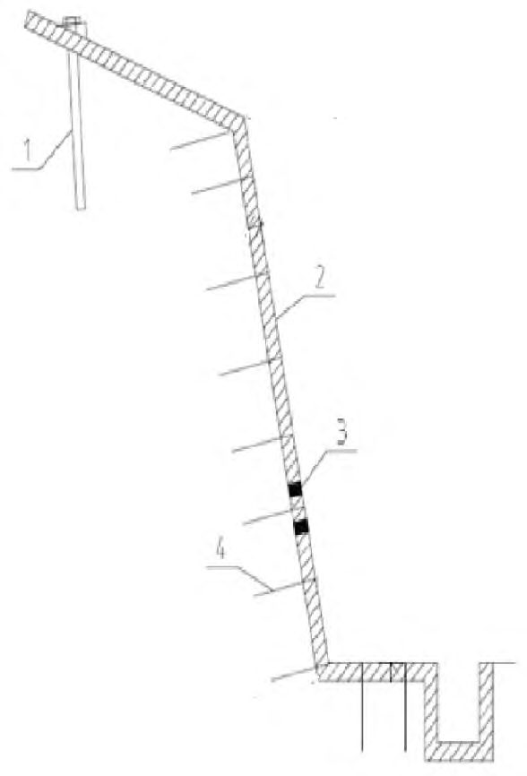
а - поддерживающая стена; б - подпорная стена; в - контрфорс; г - опояски; д - облицовочная стена; е -пломба
Рисунок 7.1 - Монолитные удерживающие сооружения
- анкеры мелкого заложения длиной до 5 м, с несущей способностью не более 100 кН закрепляются в скважине вяжущим раствором или механическим способом (буроинъекционные, клиновидные, распорные и набивные анкеры) (рисунки 7.2-7.5);
- анкеры глубокого заложения длиной до 60 м, с несущей способностью более 100 кН закрепляются в скважине вяжущим раствором.
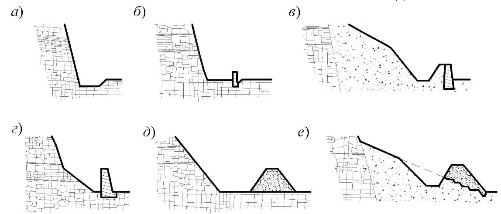
1 - оголовок; 2 - опорная плита; 3 - удерживаемая конструкция; 4 - скважина; 5 - пластиковая трубка для изоляции анкерной тяги; 6 - анкерная тяга; 7 - цементное ядро; 8 - упорный элемент; 9 - гофрированная труба; 10 - центратор; 11 - переходная трубка; 12 - уплотнитель; 13 - защитная крышка
Рисунок 7.2 - Схема буроинъекционного анкера
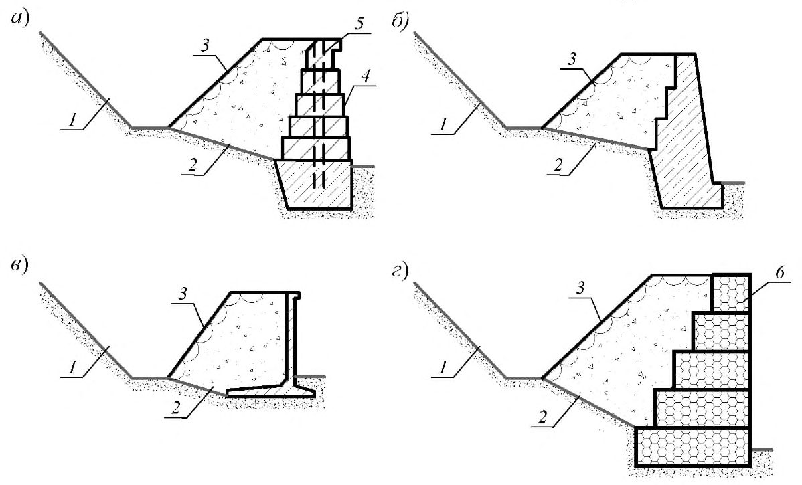
1 - клин; 2 - прорезь; 3 - стержень; 4 - участок с резьбой; 5 - хвостовик (под насадку при установке); 6 - опорная шайба; 7 - гайка
Рисунок 7.3 - Схема клиновидного анкера
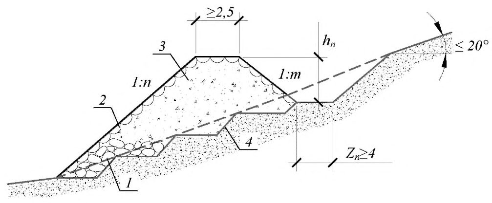
1 - распорная муфта из двух полугильз; 2 - проволочное кольцо; 3 - стержень; 4 - установочная труба; 5 - опорная шайба; 6 - гайка
Рисунок 7.4 - Схема распорного анкера
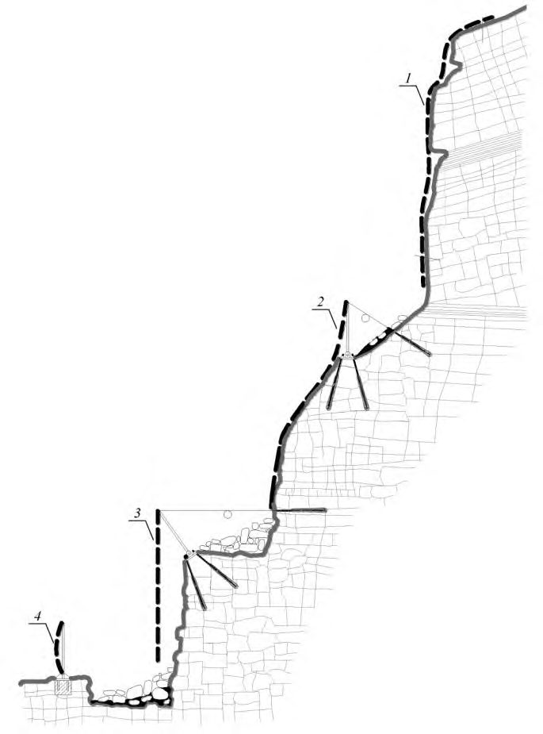
1 - цементно-песчаный раствор; 2 - забивной металлический стержень
Рисунок 7.5 - Схема набивного анкера
- анкеры без предварительного напряжения в основном предназначаются для работы на срез и изгиб;
- анкеры с предварительным напряжением предназначаются для случаев, когда преобладает нагрузка, вызывающая в основном растягивающие напряжения в направлении анкера.
- общую устойчивость сооружения;
- несущую способность анкера в целом по грунту и материалу;
- прочность отдельных элементов, входящих в состав анкера.
- отдельных анкеров с опорными шайбами и плитами;
- групповых анкеров, опертых на упорные балки (железобетонные или металлические из прокатных профилей);
- сочетанием анкеров с покрытием участков склона между ними металлической сеткой.
При выборе угла наклона анкеров к расчетной поверхности смещения закрепляемого массива необходимо учитывать следующее:
- несущая способность анкеров зависит от их ориентации относительно поверхности скольжения в вертикальной плоскости;
- при расположении анкеров нормально к поверхности предполагаемого скольжения стабилизирующее действие достигается лишь за счет сил трения, пропорциональных величине нормального давления, создаваемого за счет предварительного натяжения в активных анкерах или за счет реактивных усилий при смещении закрепляемых массивов в пассивных анкерах;
- если анкеры ориентированы относительно поверхности предполагаемого смещения под углами, отличными от 90°, то, помимо сил трения, обусловленных нормальной составляющей, возникают тангенциальные усилия, которые увеличивают или уменьшают устойчивость закрепляемого массива;
- целесообразно ориентировать анкер к поверхности вероятного смещения закрепляемого массива под углом менее 90°; рекомендуемое значение угла - 30°-60°.
Пневмонабрызг применяется для защитных покрытий относительно ровных, расчищенных откосов высотой до 20 м, на предварительно навешанную и закрепленную анкерами металлическую сетку (рисунок 7.6).
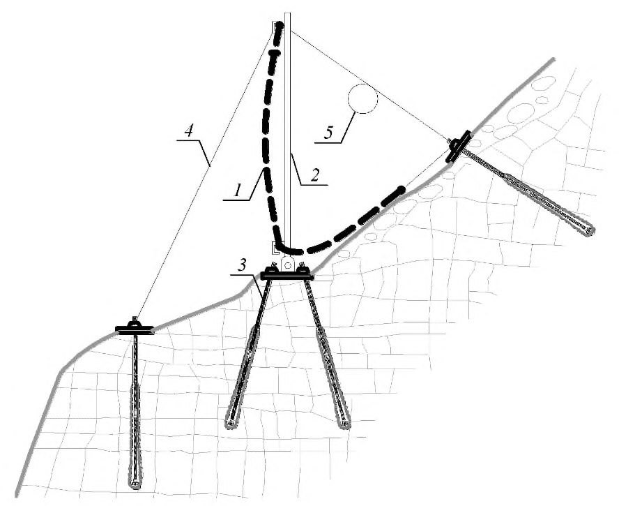
1 - несущий анкер; 2 - слой покрытия по металлической сетке; 3 - отверстия для выпуска воды; 4 - монтажные анкеры
Рисунок 7.6 - Схема покрытия пневмонабрызгом
- раствором состава 1:1. Для инъекции в породы, содержащие напорные подземные воды, применяют быстросхватывающиеся цементы. В качестве ускорителей схватывания могут быть использованы специальные добавки. В качестве заполнителя должен использоваться чистый речной или морской песок с зернами крупностью не более 1 мм.
7.3Методы пассивной противообвальной защиты
- улавливающие траншеи и полки с бордюром;
- улавливающие стены;
- оградительные улавливающие стены;
- улавливающие валы.
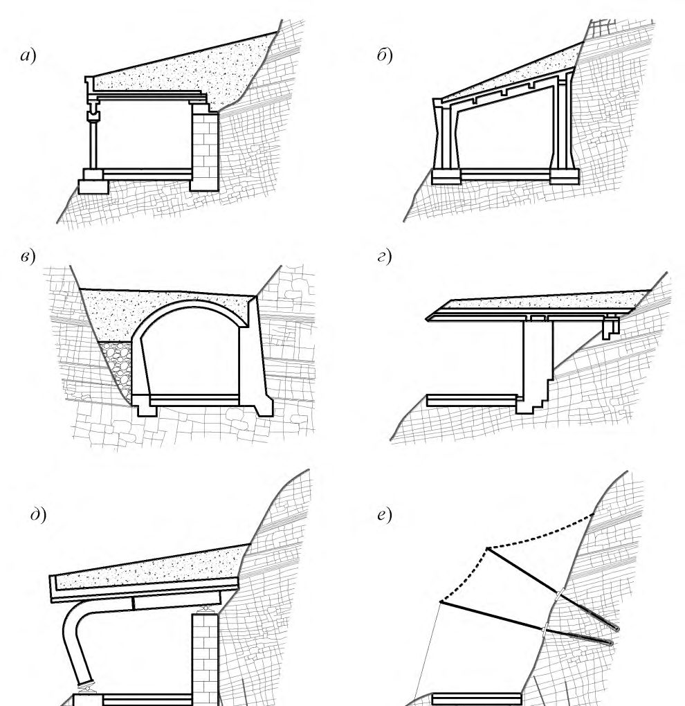
а - улавливающая траншея; б - улавливающая полка с бордюром; в - улавливающая стена; г -оградительная улавливающая стена; д - улавливающий вал у подошвы; е - улавливающий вал на склоне
Рисунок 7.7 - Массивные улавливающие сооружения
- максимальное удаление сооружения от нагорного склона;
- применение конструкций из сборных тонкостенных конструкций;
- устройство откосов склонов и амортизирующей отсыпки с максимально возможным заложением;
- увеличение высоты сооружения;
- перенос защищаемого объекта от нагорного склона.
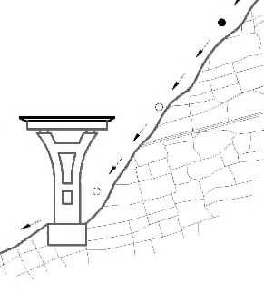
а - стена из бетонных блоков; б - стена из коробчатых габионных конструкций; в - стена из монолитного железобетона; г - стена из сборного железобетона уголкового профиля; 1 - улавливающая пазуха; 2 -амортизирующая отсыпка; 3 - крупный камень; 4 - бетонные блоки; 5 - арматура; 6 - коробчатый габион
Рисунок 7.8 - Оградительные стены
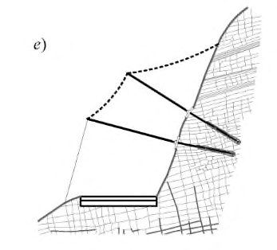
1 - упор из каменной кладки; 2 - укрепление откоса; 3 - вал из местного грунта; 4 - уступы в основании вала (штрабы); 1: n - крутизна низового откоса; 1: m - крутизна верхового откоса; hn - высота улавливающего вала; Zn - высота штрабы
Рисунок 7.9 - Улавливающие валы
- улавливающая система, которая включает основную сетку с несущими тросами;
- опорная система, состоящая из системы стоек, закрепленных на фундаментной конструкции;
- соединительные и направляющие элементы, к которым относятся продольные и поперечные растяжки, блоки, скобы, талрепы и т. п.;
- тормозные устройства различной конструкции для снижения уровня динамических воздействий.
1 - пассивная покровная сетка; 2 - гибридный барьер с покровной сеткой; 3 - гибридный барьер с подвесной сеткой; 4 - гибкий барьер
Рисунок 7.10 - Гибкие улавливающие сооружения
1 - улавливающая сетка с несущими тросами; 2 - опорная стойка; 3 - фундаментная конструкция (анкерная); 4 - поперечная растяжка; 5 - тормозное устройство
Рисунок 7.11 - Схема гибкого барьера
7.3.21 Гибридные барьеры следует применять как самостоятельно, так и в комплексе с другими типами улавливающих и пропускающих сооружений в следующих случаях:
- при значительных объемах обвалов, высокой массе и скорости скальных обломков, при наличии опасности схода селей и лавин, т. к. пропускают их без повреждений, уменьшая при этом их энергию;
- в стесненных условиях, т. к. позволяют контролировать траекторию движения обломков и сократить габариты улавливающих сооружений;
- на труднодоступных склонах, где очистка улавливающих сооружений затруднена, т. к. пропускаются продукты обвалов к их подошве.
- балочные галереи, разгружающие низовые опоры от горизонтальных нагрузок, наиболее просты по устройству и монтажу, используются при сравнительно небольших уровнях воздействий;
- рамные галереи - позволяют сократить объем работ по устройству перекрытий и опор, что особенно существенно при значительных нагрузках на конструкции;
- арочные галереи -их конструкции существенно снижают материалоемкость сооружения, однако их применение ограничено топографическими и геологическими условиями, поскольку низовые опоры воспринимают значительные горизонтальные силы;
- консольные галереи, используемые для защиты от мелких обломков скального грунта и осыпного материала, требуют надежного крепления перекрытия в устойчивый скальный грунт нагорного склона;
- гибкие подвесные галереи работают как упруго-деформируемые системы, аналогично гибким улавливающим конструкциям; не исключают падения на проезжую часть продуктов осыпей, обломков крупностью менее размера ячеек покровной сетки; испытывают значительные деформации под нагрузкой, что следует учитывать для обеспечения нормативных габаритов приближения к защищаемому объекту.
Галереи: а - балочная; б - рамная; в - арочная; г - консольная; д - гибкая подвесная; е - эстакада
Рисунок 7.12 - Пропускающие противообвальные сооружения
- постоянные нагрузки (от веса конструкций, грунтовой и амортизирующей засыпки и т. п.);
- временные длительные нагрузки (от веса и бокового давления грунтовых масс при их накоплении);
- кратковременные нагрузки, в том числе динамические от удара одиночного скального обломка расчетной крупности;
- особые нагрузки (от сейсмического воздействия).
8Геотехнический мониторинг и профилактические мероприятия
8.1Геотехнический мониторинг
- при классе сооружения КС-3;
- на особо опасных участках развития склоновых процессов (степень опасности определяется в соответствии с СП 116.13330);
- в случае применения средств противообвальной и противооползневой защиты с использованием новых или сложных конструктивнотехнологических решений и материалов.
- обеспечения безопасной эксплуатации защищаемых и прилегающих объектов;
- обеспечения безопасности населения;
- своевременного выявления отклонений в строящихся или существующих сооружениях от проектных данных;
- своевременного выявления, предупреждения и прогнозирования развития опасных геологических процессов;
- управления природными рисками;
- оценки эффективности принятых методов расчета и проектных решений.
- своевременно обеспечить мероприятия по ликвидации последствий развития оползневых и обвальных процессов;
- оценить эффективность и соответствие принятых укрепительных мероприятий местным условиям;
- оперативно укрепить дополнительные участки при необходимости;
- зафиксировать развитие перемещений неустойчивых участков, принять предупредительные меры по их принудительному обрушению с соблюдением требований техники безопасности;
- определить комплекс мер по повышению эффективности реализованных мероприятий.
- по форме представления информации в течение времени (периодический и непрерывный);
- по наблюдаемому объекту (мониторинг склоновых процессов и мониторинг сооружений).
- обзорных, с общим изображением наблюдаемого склона, сооружения;
- детальных, с изображениями состояния неукрепленных участков, участков с противооползневыми и противообвальными сооружениями
(анкерных конструкций, покровных сеток, покрытия из пневмонабрызга, субстрата и корневой системы насаждений), их общего состояния, отдельных конструкций и повреждений в них.
- геодезический контроль перемещений склонов и сооружений (также может быть применено сплошное лазерное сканирование участков);
- определение перемещений, раскрытия трещин в сооружениях и скальных массивах с применением трещиномеров, монтируемых на характерных участках;
- определение наклона сооружений, крупных скальных отдельностей с применением наклономеров, монтируемых на их поверхности;
- определение величины нагрузок и возникающих напряжений в конструкциях сооружений.
- изменения геометрии конструкций (удлинение тросов, изменение наклона стоек, их перемещение и пр.);
- изменение нагрузок на конструкцию (рост усилий в тросах, анкерах, фиксируемый непосредственно динамометрами, тензометрический контроль напряженно-деформированного состояния в элементах);
- срабатывание контрольных механизмов (страховочные кольца и пр.).
8.2Профилактические мероприятия по предупреждению обвалов
Библиография
- [1] СП 11-102-97 Инженерно-экологические изыскания для строительства
- [2] СП 11-103-97 Инженерно-гидрометеорологические изыскания для строительства
- [3] СП 11-104-97 Инженерно-геодезические изыскания для строительства
- [4] СП 11-105-97 Инженерно-геологические изыскания для строительства. Часть I. Общие правила производства работ
- [5] СП 11-105-97 Инженерно-геологические изыскания для строительства. Часть II. Правила производства работ в районах развития опасных геологических и инженерно-геологических процессов
- [6] СП 11-105-97 Инженерно-геологические изыскания для строительства. Часть III. Правила производства работ в районах распространения специфических грунтов
- [7] СП 13-102-2003 Правила обследования несущих строительных конструкций зданий и сооружений
- [8] СП 32-103-97 Проектирование морских берегозащитных сооружений
- [9] ОДМ 218.2.033-2013 Методические рекомендации по выполнению инженерно-геологических изысканий на оползнеопасных склонах и откосах автомобильных дорог
- [10] ОДМ 218.2.006-2010 Рекомендации по расчету устойчивости оползнеопасных склонов (откосов) и определению оползневых давлений на инженерные сооружения автомобильных дорог
- [11] Руководство по проектированию противооползневых и противообвальных защитных сооружений. Проектирование противообвальных защитных сооружений. - М.: ЦНИИС Минтрансстроя СССР, 1983
- [12] Методические указания по проектированию земляного полотна (выемок) в легковыветривающихся скальных породах. -М.: ЦНИИС Минтрансстроя СССР, 1974
- [13] ВСН 167-70 Технические указания по проектированию подпорных стен для транспортного строительства
- [14] ВСН 506-88 Проектирование и устройство грунтовых анкеров
- [15] Методические рекомендации по проектированию противообвальных и противолавинных галерей и эстакад для пропуска скальных обвалов в районах Северной строительно-климатической зоны. -М.: ЦНИИС Минтрансстроя СССР, 1972
- [16] ОДМ 218.2.051-2015 Рекомендации по проектированию и расчету противообвальных сооружений на автомобильных дорогах
- [17] Руководство по проектированию и технологии устройства анкерного крепления в транспортном строительстве. - М.: ЦНИИС Минтрансстроя СССР, 1987
- [18] ОДМ 218.3.008-2011 Рекомендации по мониторингу и обследованию подпорных стен и удерживающих сооружений на оползневых участках автомобильных дорог
- [19] Методическое руководство по комплексному горно-экологическому мониторингу при строительстве и эксплуатации транспортных тоннелей (утверждено Тоннельной ассоциацией России 1 сентября 2009 г., согласовано с Федеральной службой по экологическому, технологическому и атомному надзору 10 августа 2009 г.)
- [20] ОДМ 218.4.002-2008 Руководство по проведению мониторинга состояния эксплуатируемых мостовых сооружений